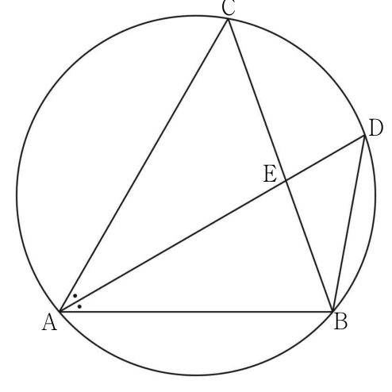

원본 (내부용)함수 \(f(x)\)가 모든 실수 \(x\)에 대하여 \( 2x+1\le f(x)\le (x+1)^2 \) 을 만족시킬 때, \(\displaystyle\lim_{x\to0}(x+5)f(x)\)의 값은? [3점]
① \(1\)② \(2\)③ \(3\)④ \(4\)⑤ \(5\)
그림·참고 ---
원본 정답 ⑤
원본 풀이 (내부용)[출제의도] 함수의 극한의 성질 이해하기
\(
2x+1\le f(x)\le (x+1)^2
\)
에서
\(
\lim_{x\to0}(2x+1)=\lim_{x\to0}(x+1)^2=1
\)
이므로 함수의 극한의 대소 관계에 의하여
\(
\lim_{x\to0}f(x)=1
\)
\(
\lim_{x\to0}(x+5)f(x)
=\lim_{x\to0}(x+5)\times\lim_{x\to0}f(x)
=5\times1=5
\)
생성기 숫자판 1/6 · G2M6-01#7함수 $f\left(x\right)$가 모든 실수 $x$에 대하여 $20x+100\le f\left(x\right)\le \left(x+10\right)^{2}$을 만족시킬 때, $\lim_{x\to 0}\left(x+7\right)f\left(x\right)$의 값으로 옳은 것을 고르세요.
① $400$② $500$③ $600$④ $700$⑤ $800$
정답④ $700$ $\lim_{x\to 0}\left(20x+100\right)=100$, $\lim_{x\to 0}\left(x+10\right)^{2}=100$이므로 함수의 극한의 대소 관계에 의하여 $\lim_{x\to 0}f\left(x\right)=100$ $\lim_{x\to 0}\left(x+7\right)f\left(x\right)=7\times 100$ $=700$
숫자: 원본 2 1 1 0 5 → 쌍둥이 20 100 10 0 7 · 같은 수: 0
생성기 숫자판 2/6 · G2M6-01#7함수 $f\left(x\right)$가 모든 실수 $x$에 대하여 $16x+64\le f\left(x\right)\le \left(x+8\right)^{2}$을 만족시킬 때, $\lim_{x\to 0}\left(x+3\right)f\left(x\right)$의 값으로 옳은 것을 고르세요.
① $64$② $128$③ $192$④ $256$⑤ $320$
정답③ $192$ $\lim_{x\to 0}\left(16x+64\right)=64$, $\lim_{x\to 0}\left(x+8\right)^{2}=64$이므로 함수의 극한의 대소 관계에 의하여 $\lim_{x\to 0}f\left(x\right)=64$ $\lim_{x\to 0}\left(x+3\right)f\left(x\right)=3\times 64$ $=192$
숫자: 원본 2 1 1 0 5 → 쌍둥이 16 64 8 0 3 · 같은 수: 0
생성기 숫자판 3/6 · G2M6-01#7함수 $f\left(x\right)$가 모든 실수 $x$에 대하여 $2x+1\le f\left(x\right)\le \left(x+1\right)^{2}$을 만족시킬 때, $\lim_{x\to 0}\left(x+7\right)f\left(x\right)$의 값으로 옳은 것을 고르세요.
① $3$② $4$③ $5$④ $6$⑤ $7$
정답⑤ $7$ $\lim_{x\to 0}\left(2x+1\right)=1$, $\lim_{x\to 0}\left(x+1\right)^{2}=1$이므로 함수의 극한의 대소 관계에 의하여 $\lim_{x\to 0}f\left(x\right)=1$ $\lim_{x\to 0}\left(x+7\right)f\left(x\right)=7\times 1$ $=7$
숫자: 원본 2 1 1 0 5 → 쌍둥이 2 1 1 0 7 · 같은 수: 0 1 2
생성기 숫자판 4/6 · G2M6-01#7함수 $f\left(x\right)$가 모든 실수 $x$에 대하여 $22x+121\le f\left(x\right)\le \left(x+11\right)^{2}$을 만족시킬 때, $\lim_{x\to 0}\left(x+7\right)f\left(x\right)$의 값으로 옳은 것을 고르세요.
① $484$② $605$③ $726$④ $847$⑤ $968$
정답④ $847$ $\lim_{x\to 0}\left(22x+121\right)=121$, $\lim_{x\to 0}\left(x+11\right)^{2}=121$이므로 함수의 극한의 대소 관계에 의하여 $\lim_{x\to 0}f\left(x\right)=121$ $\lim_{x\to 0}\left(x+7\right)f\left(x\right)=7\times 121$ $=847$
숫자: 원본 2 1 1 0 5 → 쌍둥이 22 121 11 0 7 · 같은 수: 0
생성기 숫자판 5/6 · G2M6-01#7함수 $f\left(x\right)$가 모든 실수 $x$에 대하여 $10x+25\le f\left(x\right)\le \left(x+5\right)^{2}$을 만족시킬 때, $\lim_{x\to 0}\left(x+4\right)f\left(x\right)$의 값으로 옳은 것을 고르세요.
① $25$② $50$③ $75$④ $100$⑤ $125$
정답④ $100$ $\lim_{x\to 0}\left(10x+25\right)=25$, $\lim_{x\to 0}\left(x+5\right)^{2}=25$이므로 함수의 극한의 대소 관계에 의하여 $\lim_{x\to 0}f\left(x\right)=25$ $\lim_{x\to 0}\left(x+4\right)f\left(x\right)=4\times 25$ $=100$
숫자: 원본 2 1 1 0 5 → 쌍둥이 10 25 5 0 4 · 같은 수: 0 5
생성기 숫자판 6/6 · G2M6-01#7함수 $f\left(x\right)$가 모든 실수 $x$에 대하여 $8x+16\le f\left(x\right)\le \left(x+4\right)^{2}$을 만족시킬 때, $\lim_{x\to 0}\left(x+3\right)f\left(x\right)$의 값으로 옳은 것을 고르세요.
① $32$② $48$③ $64$④ $80$⑤ $96$
정답② $48$ $\lim_{x\to 0}\left(8x+16\right)=16$, $\lim_{x\to 0}\left(x+4\right)^{2}=16$이므로 함수의 극한의 대소 관계에 의하여 $\lim_{x\to 0}f\left(x\right)=16$ $\lim_{x\to 0}\left(x+3\right)f\left(x\right)=3\times 16$ $=48$
숫자: 원본 2 1 1 0 5 → 쌍둥이 8 16 4 0 3 · 같은 수: 0
5. 2022년 11월 5번 · 3점 · 수학Ⅰ 삼각함수 · G2M1-02#8
원본 (내부용)\(0\le x\le3\pi\)일 때, 방정식 \(\sqrt2\cos x-1=0\)의 모든 해의 합은? [3점]
① \(\frac{15}{4}\pi\)② \(4\pi\)③ \(\frac{17}{4}\pi\)④ \(\frac92\pi\)⑤ \(\frac{19}{4}\pi\)
원본 정답 ③
원본 풀이 (내부용)[출제의도] 삼각방정식을 활용하여 문제해결하기
\(
\sqrt2\cos x-1=0,\qquad \cos x=\frac{\sqrt2}{2}
\)
\(
0\le x\le3\pi
\)
일 때, 방정식 \(\cos x=\frac{\sqrt2}{2}\)의 해는
\(
x=\frac\pi4,\quad x=\frac{7\pi}4,\quad x=\frac{9\pi}4
\)
따라서 모든 해의 합은
\(
\frac{17\pi}4
\)
생성기 숫자판 1/6 · G2M1-02#8$0\le x\le 2\pi$일 때, 방정식 $\sqrt{2}\cos x+1=0$의 모든 해의 합으로 옳은 것을 고르세요.
① $\pi$② $\frac{3}{2}\pi$③ $2\pi$④ $\frac{5}{2}\pi$⑤ $3\pi$
정답③ $2\pi$ $\sqrt{2}\cos x+1=0$에서 $\cos x=-\frac{\sqrt{2}}{2}$ $0\le x\le 2\pi$에서 $x=\frac{3}{4}\pi$ 또는 $x=\frac{5}{4}\pi$ 따라서 모든 해의 합은 $2\pi$
숫자: 원본 0 3 2 1 0 → 쌍둥이 0 2 2 1 0 · 같은 수: 0 1 2
생성기 숫자판 2/6 · G2M1-02#8$0\le x\le \pi$일 때, 방정식 $\sqrt{2}\sin x-1=0$의 모든 해의 합으로 옳은 것을 고르세요.
① $\frac{\pi}{2}$② $\pi$③ $\frac{3}{2}\pi$④ $2\pi$⑤ $\frac{5}{2}\pi$
정답② $\pi$ $\sqrt{2}\sin x-1=0$에서 $\sin x=\frac{\sqrt{2}}{2}$ $0\le x\le \pi$에서 $x=\frac{\pi}{4}$ 또는 $x=\frac{3}{4}\pi$ 따라서 모든 해의 합은 $\pi$
숫자: 원본 0 3 2 1 0 → 쌍둥이 0 2 1 0 · 같은 수: 0 1 2
생성기 숫자판 3/6 · G2M1-02#8$0\le x\le 2\pi$일 때, 방정식 $2\cos x+1=0$의 모든 해의 합으로 옳은 것을 고르세요.
① $\pi$② $\frac{3}{2}\pi$③ $2\pi$④ $\frac{5}{2}\pi$⑤ $3\pi$
정답③ $2\pi$ $2\cos x+1=0$에서 $\cos x=-\frac{1}{2}$ $0\le x\le 2\pi$에서 $x=\frac{2}{3}\pi$ 또는 $x=\frac{4}{3}\pi$ 따라서 모든 해의 합은 $2\pi$
숫자: 원본 0 3 2 1 0 → 쌍둥이 0 2 2 1 0 · 같은 수: 0 1 2
생성기 숫자판 4/6 · G2M1-02#8$0\le x\le \pi$일 때, 방정식 $2\sin x-1=0$의 모든 해의 합으로 옳은 것을 고르세요.
① $\frac{\pi}{2}$② $\pi$③ $\frac{3}{2}\pi$④ $2\pi$⑤ $\frac{5}{2}\pi$
정답② $\pi$ $2\sin x-1=0$에서 $\sin x=\frac{1}{2}$ $0\le x\le \pi$에서 $x=\frac{\pi}{6}$ 또는 $x=\frac{5}{6}\pi$ 따라서 모든 해의 합은 $\pi$
숫자: 원본 0 3 2 1 0 → 쌍둥이 0 2 1 0 · 같은 수: 0 1 2
생성기 숫자판 5/6 · G2M1-02#8$0\le x\le 3\pi$일 때, 방정식 $\sqrt{2}\sin x-1=0$의 모든 해의 합으로 옳은 것을 고르세요.
① $5\pi$② $\frac{11}{2}\pi$③ $6\pi$④ $\frac{13}{2}\pi$⑤ $7\pi$
정답③ $6\pi$ $\sqrt{2}\sin x-1=0$에서 $\sin x=\frac{\sqrt{2}}{2}$ $0\le x\le 3\pi$에서 $x=\frac{\pi}{4}$ 또는 $x=\frac{3}{4}\pi$ 또는 $x=\frac{9}{4}\pi$ 또는 $x=\frac{11}{4}\pi$ 따라서 모든 해의 합은 $6\pi$
숫자: 원본 0 3 2 1 0 → 쌍둥이 0 3 2 1 0 · 같은 수: 0 1 2 3
생성기 숫자판 6/6 · G2M1-02#8$0\le x\le 3\pi$일 때, 방정식 $\sqrt{2}\cos x-1=0$의 모든 해의 합으로 옳은 것을 고르세요.
① $\frac{13}{4}\pi$② $\frac{15}{4}\pi$③ $\frac{17}{4}\pi$④ $\frac{19}{4}\pi$⑤ $\frac{21}{4}\pi$
정답③ $\frac{17}{4}\pi$ $\sqrt{2}\cos x-1=0$에서 $\cos x=\frac{\sqrt{2}}{2}$ $0\le x\le 3\pi$에서 $x=\frac{\pi}{4}$ 또는 $x=\frac{7}{4}\pi$ 또는 $x=\frac{9}{4}\pi$ 따라서 모든 해의 합은 $\frac{17}{4}\pi$
숫자: 원본 0 3 2 1 0 → 쌍둥이 0 3 2 1 0 · 같은 수: 0 1 2 3
6. 2022년 11월 6번 · 3점 · 수학Ⅱ 함수의 극한·연속 · G2M6-01#8
원본 (내부용)함수 \(f(x)\)에 대하여 \(\displaystyle\lim_{x\to\infty}\frac{f(x)}x=3\)일 때, \( \lim_{x\to\infty}\frac{2x^2-1}{\{f(x)\}^2+3x^2} \) 의 값은? [3점]
① \(\frac16\)② \(\frac13\)③ \(\frac12\)④ \(\frac23\)⑤ \(\frac56\)
원본 정답 ①
원본 풀이 (내부용)[출제의도] 함수의 극한 이해하기
\(
\lim_{x\to\infty}
\frac{2x^2-1}{\{f(x)\}^2+3x^2}
=
\lim_{x\to\infty}
\frac{2-\frac1{x^2}}
{\left\{\frac{f(x)}x\right\}^2+3}
=\frac{2-0}{0+3}=\frac16
\)
생성기 숫자판 1/6 · G2M6-01#8함수 $f\left(x\right)$에 대하여 $\lim_{x\to\infty}\frac{f\left(x\right)}{x}=6$일 때, $\lim_{x\to\infty}\frac{9x^{2}+4}{\left\{f\left(x\right)\right\}^{2}+7x^{2}}$의 값으로 옳은 것을 고르세요.
① $\frac{9}{43}$② $\frac{1}{4}$③ $\frac{18}{43}$④ $\frac{9}{13}$⑤ $\frac{61}{86}$
정답① $\frac{9}{43}$ 분모와 분자를 각각 $x^{2}$으로 나누면 $\lim_{x\to\infty}\frac{9+\frac{4}{x^{2}}}{\left\{\frac{f\left(x\right)}{x}\right\}^{2}+7}$ $=\frac{9}{6^{2}+7}$ $=\frac{9}{43}$
숫자: 원본 3 2 1 3 → 쌍둥이 6 9 4 7
생성기 숫자판 2/6 · G2M6-01#8함수 $f\left(x\right)$에 대하여 $\lim_{x\to\infty}\frac{f\left(x\right)}{x}=2$일 때, $\lim_{x\to\infty}\frac{x^{2}+7}{\left\{f\left(x\right)\right\}^{2}+7x^{2}}$의 값으로 옳은 것을 고르세요.
① $\frac{7}{99}$② $\frac{1}{11}$③ $\frac{1}{9}$④ $\frac{2}{11}$⑤ $\frac{13}{22}$
정답② $\frac{1}{11}$ 분모와 분자를 각각 $x^{2}$으로 나누면 $\lim_{x\to\infty}\frac{1+\frac{7}{x^{2}}}{\left\{\frac{f\left(x\right)}{x}\right\}^{2}+7}$ $=\frac{1}{2^{2}+7}$ $=\frac{1}{11}$
숫자: 원본 3 2 1 3 → 쌍둥이 2 7 7 · 같은 수: 2
생성기 숫자판 3/6 · G2M6-01#8함수 $f\left(x\right)$에 대하여 $\lim_{x\to\infty}\frac{f\left(x\right)}{x}=8$일 때, $\lim_{x\to\infty}\frac{2x^{2}+12}{\left\{f\left(x\right)\right\}^{2}+12x^{2}}$의 값으로 옳은 것을 고르세요.
① $\frac{1}{38}$② $\frac{1}{32}$③ $\frac{1}{19}$④ $\frac{1}{10}$⑤ $\frac{10}{19}$
정답① $\frac{1}{38}$ 분모와 분자를 각각 $x^{2}$으로 나누면 $\lim_{x\to\infty}\frac{2+\frac{12}{x^{2}}}{\left\{\frac{f\left(x\right)}{x}\right\}^{2}+12}$ $=\frac{2}{8^{2}+12}$ $=\frac{1}{38}$
숫자: 원본 3 2 1 3 → 쌍둥이 8 2 12 12 · 같은 수: 2
생성기 숫자판 4/6 · G2M6-01#8함수 $f\left(x\right)$에 대하여 $\lim_{x\to\infty}\frac{f\left(x\right)}{x}=6$일 때, $\lim_{x\to\infty}\frac{10x^{2}-4}{\left\{f\left(x\right)\right\}^{2}+3x^{2}}$의 값으로 옳은 것을 고르세요.
① $\frac{2}{13}$② $\frac{25}{117}$③ $\frac{55}{234}$④ $\frac{10}{39}$⑤ $\frac{20}{39}$
정답④ $\frac{10}{39}$ 분모와 분자를 각각 $x^{2}$으로 나누면 $\lim_{x\to\infty}\frac{10-\frac{4}{x^{2}}}{\left\{\frac{f\left(x\right)}{x}\right\}^{2}+3}$ $=\frac{10}{6^{2}+3}$ $=\frac{10}{39}$
숫자: 원본 3 2 1 3 → 쌍둥이 6 10 4 3 · 같은 수: 3
생성기 숫자판 5/6 · G2M6-01#8함수 $f\left(x\right)$에 대하여 $\lim_{x\to\infty}\frac{f\left(x\right)}{x}=4$일 때, $\lim_{x\to\infty}\frac{9x^{2}-5}{\left\{f\left(x\right)\right\}^{2}+12x^{2}}$의 값으로 옳은 것을 고르세요.
① $\frac{9}{28}$② $\frac{9}{16}$③ $\frac{9}{14}$④ $\frac{23}{28}$⑤ $\frac{37}{28}$
정답① $\frac{9}{28}$ 분모와 분자를 각각 $x^{2}$으로 나누면 $\lim_{x\to\infty}\frac{9-\frac{5}{x^{2}}}{\left\{\frac{f\left(x\right)}{x}\right\}^{2}+12}$ $=\frac{9}{4^{2}+12}$ $=\frac{9}{28}$
숫자: 원본 3 2 1 3 → 쌍둥이 4 9 5 12
생성기 숫자판 6/6 · G2M6-01#8함수 $f\left(x\right)$에 대하여 $\lim_{x\to\infty}\frac{f\left(x\right)}{x}=6$일 때, $\lim_{x\to\infty}\frac{x^{2}-10}{\left\{f\left(x\right)\right\}^{2}+1x^{2}}$의 값으로 옳은 것을 고르세요.
① $\frac{8}{333}$② $\frac{11}{444}$③ $\frac{17}{666}$④ $\frac{35}{1332}$⑤ $\frac{1}{37}$
정답⑤ $\frac{1}{37}$ 분모와 분자를 각각 $x^{2}$으로 나누면 $\lim_{x\to\infty}\frac{1-\frac{10}{x^{2}}}{\left\{\frac{f\left(x\right)}{x}\right\}^{2}+1}$ $=\frac{1}{6^{2}+1}$ $=\frac{1}{37}$
숫자: 원본 3 2 1 3 → 쌍둥이 6 10 1 · 같은 수: 1
7. 2022년 11월 7번 · 3점 · 수학Ⅱ 함수의 극한·연속 · G2f-14#0
원본 (내부용)두 함수 \(y=f(x),\ y=g(x)\)의 그래프가 그림과 같다. - \(y=f(x)\) 그래프: \(x<0\) 쪽 곡선이 \(y\)-축의 \((0,2)\)에 닫힌 점으로 이어진다. \(x>0\) 쪽에는 \(y\)-축의 \((0,-1)\)에서 열린 점으로 시작하는 직선이 그려져 있다. - \(y=g(x)\) 그래프: \(x<0\) 쪽 직선이 \(y\)-축의 \((0,1)\)에 닫힌 점으로 이어진다. \(x>0\) 쪽에는 \(y\)-축의 \((0,3)\)에서 열린 점으로 시작하는 곡선이 그려져 있다. \( \lim_{x\to0}\{f(x)+kg(x)\} \) 의 값이 존재할 때, 상수 \(k\)의 값은? [3점]
① \(\frac12\)② \(1\)③ \(\frac32\)④ \(2\)⑤ \(\frac52\)
그림·참고 ---
원본 정답 ③
원본 풀이 (내부용)[출제의도] 함수의 극한 이해하기
\(
\lim_{x\to0^-}\{f(x)+kg(x)\}=2+k\times1=2+k
\)
\(
\lim_{x\to0^+}\{f(x)+kg(x)\}=(-1)+k\times3=-1+3k
\)
\(
\lim_{x\to0}\{f(x)+kg(x)\}
\)
의 값이 존재하므로
\(
2+k=-1+3k
\)
에서
\(
k=\frac32
\)
생성기 숫자판 1/6 · G2f-14#0두 함수 $y=f\left(x\right)$, $y=g\left(x\right)$의 그래프가 그림과 같습니다. 두 그래프에서 $x<0$인 쪽과 $x>0$인 쪽의 함숫값을 각각 살펴봅니다. 여기서 $x=0$에서 $f(x)$의 좌극한과 우극한은 각각 3,-3이고, $g(x)$의 좌극한과 우극한은 각각 2,4입니다. $\lim_{x\to 0}\left\{f\left(x\right)+kg\left(x\right)\right\}$의 값이 존재할 때, 상수 $k$의 값으로 옳은 것을 고르세요.
① $2$② $\frac{5}{2}$③ $3$④ $\frac{7}{2}$⑤ $4$
정답③ $3$ $\lim_{x\to 0-}\left\{f\left(x\right)+kg\left(x\right)\right\}=3+2k$ $\lim_{x\to 0+}\left\{f\left(x\right)+kg\left(x\right)\right\}=-3+4k$ 극한값이 존재하려면 두 값이 같아야 하므로 $3+2k=-3+4k$ 따라서 $k=3$
생성기 숫자판 2/6 · G2f-14#0두 함수 $y=f\left(x\right)$, $y=g\left(x\right)$의 그래프가 그림과 같습니다. 두 그래프에서 $x<0$인 쪽과 $x>0$인 쪽의 함숫값을 각각 살펴봅니다. 여기서 $x=0$에서 $f(x)$의 좌극한과 우극한은 각각 4,-3이고, $g(x)$의 좌극한과 우극한은 각각 1,3입니다. $\lim_{x\to 0}\left\{f\left(x\right)+kg\left(x\right)\right\}$의 값이 존재할 때, 상수 $k$의 값으로 옳은 것을 고르세요.
① $\frac{5}{2}$② $3$③ $\frac{7}{2}$④ $4$⑤ $\frac{9}{2}$
정답③ $\frac{7}{2}$ $\lim_{x\to 0-}\left\{f\left(x\right)+kg\left(x\right)\right\}=4+1k$ $\lim_{x\to 0+}\left\{f\left(x\right)+kg\left(x\right)\right\}=-3+3k$ 극한값이 존재하려면 두 값이 같아야 하므로 $4+1k=-3+3k$ 따라서 $k=\frac{7}{2}$
생성기 숫자판 3/6 · G2f-14#0두 함수 $y=f\left(x\right)$, $y=g\left(x\right)$의 그래프가 그림과 같습니다. 두 그래프에서 $x<0$인 쪽과 $x>0$인 쪽의 함숫값을 각각 살펴봅니다. 여기서 $x=0$에서 $f(x)$의 좌극한과 우극한은 각각 2,-2이고, $g(x)$의 좌극한과 우극한은 각각 2,3입니다. $\lim_{x\to 0}\left\{f\left(x\right)+kg\left(x\right)\right\}$의 값이 존재할 때, 상수 $k$의 값으로 옳은 것을 고르세요.
① $3$② $\frac{7}{2}$③ $4$④ $\frac{9}{2}$⑤ $5$
정답③ $4$ $\lim_{x\to 0-}\left\{f\left(x\right)+kg\left(x\right)\right\}=2+2k$ $\lim_{x\to 0+}\left\{f\left(x\right)+kg\left(x\right)\right\}=-2+3k$ 극한값이 존재하려면 두 값이 같아야 하므로 $2+2k=-2+3k$ 따라서 $k=4$
생성기 숫자판 4/6 · G2f-14#0두 함수 $y=f\left(x\right)$, $y=g\left(x\right)$의 그래프가 그림과 같습니다. 두 그래프에서 $x<0$인 쪽과 $x>0$인 쪽의 함숫값을 각각 살펴봅니다. 여기서 $x=0$에서 $f(x)$의 좌극한과 우극한은 각각 3,-3이고, $g(x)$의 좌극한과 우극한은 각각 2,3입니다. $\lim_{x\to 0}\left\{f\left(x\right)+kg\left(x\right)\right\}$의 값이 존재할 때, 상수 $k$의 값으로 옳은 것을 고르세요.
① $5$② $\frac{11}{2}$③ $6$④ $\frac{13}{2}$⑤ $7$
정답③ $6$ $\lim_{x\to 0-}\left\{f\left(x\right)+kg\left(x\right)\right\}=3+2k$ $\lim_{x\to 0+}\left\{f\left(x\right)+kg\left(x\right)\right\}=-3+3k$ 극한값이 존재하려면 두 값이 같아야 하므로 $3+2k=-3+3k$ 따라서 $k=6$
생성기 숫자판 5/6 · G2f-14#0두 함수 $y=f\left(x\right)$, $y=g\left(x\right)$의 그래프가 그림과 같습니다. 두 그래프에서 $x<0$인 쪽과 $x>0$인 쪽의 함숫값을 각각 살펴봅니다. 여기서 $x=0$에서 $f(x)$의 좌극한과 우극한은 각각 4,-3이고, $g(x)$의 좌극한과 우극한은 각각 2,4입니다. $\lim_{x\to 0}\left\{f\left(x\right)+kg\left(x\right)\right\}$의 값이 존재할 때, 상수 $k$의 값으로 옳은 것을 고르세요.
① $\frac{5}{2}$② $3$③ $\frac{7}{2}$④ $4$⑤ $\frac{9}{2}$
정답③ $\frac{7}{2}$ $\lim_{x\to 0-}\left\{f\left(x\right)+kg\left(x\right)\right\}=4+2k$ $\lim_{x\to 0+}\left\{f\left(x\right)+kg\left(x\right)\right\}=-3+4k$ 극한값이 존재하려면 두 값이 같아야 하므로 $4+2k=-3+4k$ 따라서 $k=\frac{7}{2}$
생성기 숫자판 6/6 · G2f-14#0두 함수 $y=f\left(x\right)$, $y=g\left(x\right)$의 그래프가 그림과 같습니다. 두 그래프에서 $x<0$인 쪽과 $x>0$인 쪽의 함숫값을 각각 살펴봅니다. 여기서 $x=0$에서 $f(x)$의 좌극한과 우극한은 각각 1,-3이고, $g(x)$의 좌극한과 우극한은 각각 1,2입니다. $\lim_{x\to 0}\left\{f\left(x\right)+kg\left(x\right)\right\}$의 값이 존재할 때, 상수 $k$의 값으로 옳은 것을 고르세요.
① $3$② $\frac{7}{2}$③ $4$④ $\frac{9}{2}$⑤ $5$
정답③ $4$ $\lim_{x\to 0-}\left\{f\left(x\right)+kg\left(x\right)\right\}=1+1k$ $\lim_{x\to 0+}\left\{f\left(x\right)+kg\left(x\right)\right\}=-3+2k$ 극한값이 존재하려면 두 값이 같아야 하므로 $1+1k=-3+2k$ 따라서 $k=4$
원본 (내부용)함수 \(f(x)=\log_a(3x+1)+2\)가 닫힌구간 \([0,5]\)에서 최솟값 \(\frac23\)을 가질 때, \(a\)의 값은? (단, \(a\)는 \(1\)이 아닌 양의 상수이다.) [3점]
① \(\frac1{32}\)② \(\frac18\)③ \(\frac12\)④ \(2\)⑤ \(8\)
원본 정답 ②
원본 풀이 (내부용)[출제의도] 로그함수의 그래프 이해하기
\(a>1\)이라 하면 닫힌구간 \([0,5]\)에서 함수 \(f(x)\)의 최솟값은
\(
f(0)=2\ne\frac23
\)
이므로 \(0<a<1\).
그러므로 닫힌구간 \([0,5]\)에서 함수 \(f(x)\)의 최솟값은
\(
f(5)=\log_a16+2
\)
\(
\log_a16+2=\frac23
\)
에서
\(
4\log_a2=-\frac43,\qquad a^{-\frac13}=2
\)
따라서
\(
a=2^{-3}=\frac18
\)
생성기 숫자판 1/6 · G2M1-01b#8함수 $f\left(x\right)=\log_{a}\left(7x+1\right)+2$가 닫힌구간 $\left[0,\ 1\right]$에서 최솟값 $\frac{5}{4}$를 가질 때, $a$의 값으로 옳은 것을 고르세요. (단, $a$는 $1$이 아닌 양의 상수입니다.)
① $\frac{1}{64}$② $\frac{1}{32}$③ $\frac{1}{16}$④ $\frac{1}{8}$⑤ $\frac{1}{4}$
생성기 숫자판 2/6 · G2M1-01b#8함수 $f\left(x\right)=\log_{a}\left(x+1\right)+3$이 닫힌구간 $\left[0,\ 7\right]$에서 최솟값 $\frac{9}{4}$를 가질 때, $a$의 값으로 옳은 것을 고르세요. (단, $a$는 $1$이 아닌 양의 상수입니다.)
① $\frac{1}{64}$② $\frac{1}{32}$③ $\frac{1}{16}$④ $\frac{1}{8}$⑤ $\frac{1}{4}$
생성기 숫자판 3/6 · G2M1-01b#8함수 $f\left(x\right)=\log_{a}\left(x+1\right)+1$이 닫힌구간 $\left[0,\ 3\right]$에서 최솟값 $\frac{1}{3}$을 가질 때, $a$의 값으로 옳은 것을 고르세요. (단, $a$는 $1$이 아닌 양의 상수입니다.)
① $\frac{1}{32}$② $\frac{1}{16}$③ $\frac{1}{8}$④ $\frac{1}{4}$⑤ $\frac{1}{2}$
생성기 숫자판 4/6 · G2M1-01b#8함수 $f\left(x\right)=\log_{a}\left(x+1\right)+3$이 닫힌구간 $\left[0,\ 7\right]$에서 최솟값 $2$를 가질 때, $a$의 값으로 옳은 것을 고르세요. (단, $a$는 $1$이 아닌 양의 상수입니다.)
① $\frac{1}{32}$② $\frac{1}{16}$③ $\frac{1}{8}$④ $\frac{1}{4}$⑤ $\frac{1}{2}$
생성기 숫자판 5/6 · G2M1-01b#8함수 $f\left(x\right)=\log_{a}\left(7x+1\right)+3$이 닫힌구간 $\left[0,\ 1\right]$에서 최솟값 $\frac{9}{4}$를 가질 때, $a$의 값으로 옳은 것을 고르세요. (단, $a$는 $1$이 아닌 양의 상수입니다.)
① $\frac{1}{64}$② $\frac{1}{32}$③ $\frac{1}{16}$④ $\frac{1}{8}$⑤ $\frac{1}{4}$
생성기 숫자판 6/6 · G2M1-01b#8함수 $f\left(x\right)=\log_{a}\left(3x+1\right)+3$이 닫힌구간 $\left[0,\ 1\right]$에서 최솟값 $\frac{5}{2}$를 가질 때, $a$의 값으로 옳은 것을 고르세요. (단, $a$는 $1$이 아닌 양의 상수입니다.)
① $\frac{1}{64}$② $\frac{1}{32}$③ $\frac{1}{16}$④ $\frac{1}{8}$⑤ $\frac{1}{4}$
원본 (내부용)실수 전체의 집합에서 연속인 함수 \(f(x)\)가 모든 실수 \(x\)에 대하여 \( (x-1)f(x)=\sqrt{x^2+3}+a \) 를 만족시킬 때, \(f(1)\)의 값은? (단, \(a\)는 상수이다.) [3점]
① \(\frac14\)② \(\frac12\)③ \(\frac34\)④ \(1\)⑤ \(\frac54\)
원본 정답 ②
원본 풀이 (내부용)[출제의도] 연속함수의 성질을 활용하여 문제해결하기
\(
(x-1)f(x)=\sqrt{x^2+3}+a
\)
양변에 \(x=1\)을 대입하면
\(
0=\sqrt{1^2+3}+a
\)
에서 \(a=-2\).
\(x\ne1\)일 때,
\(
f(x)=\frac{\sqrt{x^2+3}-2}{x-1}
\)
함수 \(f(x)\)는 \(x=1\)에서 연속이므로
\(
f(1)=\lim_{x\to1}f(x)
=\lim_{x\to1}\frac{\sqrt{x^2+3}-2}{x-1}
\)
\(
=\lim_{x\to1}\frac{x^2-1}{(x-1)(\sqrt{x^2+3}+2)}
=\lim_{x\to1}\frac{x+1}{\sqrt{x^2+3}+2}
=\frac{1+1}{\sqrt{1^2+3}+2}
=\frac12
\)
생성기 숫자판 1/6 · G2M6-01#9실수 전체의 집합에서 연속인 함수 $f\left(x\right)$가 모든 실수 $x$에 대하여 $\left(x-1\right)f\left(x\right)=\sqrt{x^{2}+35}+a$를 만족시킬 때, $f\left(1\right)$의 값으로 옳은 것을 고르세요. (단, $a$는 상수입니다.)
① $\frac{1}{6}$② $\frac{1}{3}$③ $\frac{5}{12}$④ $\frac{2}{3}$⑤ $\frac{7}{6}$
생성기 숫자판 2/6 · G2M6-01#9실수 전체의 집합에서 연속인 함수 $f\left(x\right)$가 모든 실수 $x$에 대하여 $\left(x--3\right)f\left(x\right)=\sqrt{x^{2}+160}+a$를 만족시킬 때, $f\left(-3\right)$의 값으로 옳은 것을 고르세요. (단, $a$는 상수입니다.)
① $-\frac{3}{13}$② $\frac{1}{52}$③ $\frac{1}{13}$④ $\frac{7}{26}$⑤ $\frac{10}{13}$
생성기 숫자판 3/6 · G2M6-01#9실수 전체의 집합에서 연속인 함수 $f\left(x\right)$가 모든 실수 $x$에 대하여 $\left(x-1\right)f\left(x\right)=\sqrt{x^{2}+8}+a$를 만족시킬 때, $f\left(1\right)$의 값으로 옳은 것을 고르세요. (단, $a$는 상수입니다.)
① $\frac{1}{3}$② $\frac{7}{12}$③ $\frac{2}{3}$④ $\frac{5}{6}$⑤ $\frac{4}{3}$
생성기 숫자판 4/6 · G2M6-01#9실수 전체의 집합에서 연속인 함수 $f\left(x\right)$가 모든 실수 $x$에 대하여 $\left(x-3\right)f\left(x\right)=\sqrt{x^{2}+16}+a$를 만족시킬 때, $f\left(3\right)$의 값으로 옳은 것을 고르세요. (단, $a$는 상수입니다.)
① $\frac{1}{10}$② $\frac{1}{5}$③ $\frac{7}{20}$④ $\frac{3}{5}$⑤ $\frac{17}{20}$
생성기 숫자판 5/6 · G2M6-01#9실수 전체의 집합에서 연속인 함수 $f\left(x\right)$가 모든 실수 $x$에 대하여 $\left(x-1\right)f\left(x\right)=\sqrt{x^{2}+3}+a$를 만족시킬 때, $f\left(1\right)$의 값으로 옳은 것을 고르세요. (단, $a$는 상수입니다.)
① $\frac{1}{4}$② $\frac{1}{2}$③ $\frac{3}{4}$④ $1$⑤ $\frac{3}{2}$
생성기 숫자판 6/6 · G2M6-01#9실수 전체의 집합에서 연속인 함수 $f\left(x\right)$가 모든 실수 $x$에 대하여 $\left(x--1\right)f\left(x\right)=\sqrt{x^{2}+120}+a$를 만족시킬 때, $f\left(-1\right)$의 값으로 옳은 것을 고르세요. (단, $a$는 상수입니다.)
① $-\frac{1}{11}$② $\frac{1}{11}$③ $\frac{7}{44}$④ $\frac{9}{22}$⑤ $\frac{10}{11}$
원본 (내부용)최고차항의 계수가 \(1\)인 이차함수 \(f(x)\)에서 \(x\)의 값이 \(0\)에서 \(6\)까지 변할 때의 평균변화율이 \(0\)일 때, \(f'(4)\)의 값은? [3점]
① \(2\)② \(4\)③ \(6\)④ \(8\)⑤ \(10\)
그림·참고 ---
원본 정답 ①
원본 풀이 (내부용)[출제의도] 평균변화율을 이용하여 추론하기
\(
f(x)=x^2+ax+b\quad(a,\ b\text{는 상수})
\)
라 하면 함수 \(f(x)\)에서 \(x\)의 값이 0에서 6까지 변할 때의 평균변화율이 0이므로
\(
\frac{f(6)-f(0)}{6-0}
=\frac{36+6a}{6}=0
\)
에서 \(a=-6\).
\(
f(x)=x^2-6x+b
\)
이므로 \(f'(x)=2x-6\).
따라서
\(
f'(4)=2\times4-6=2
\)
생성기 숫자판 1/6 · G2M8-07#3최고차항의 계수가 $1$인 이차함수 $f\left(x\right)$에서 $x$의 값이 $0$에서 $10$까지 변할 때의 평균변화율이 $0$일 때, $f'\left(11\right)$의 값으로 옳은 것을 고르세요.
① $8$② $10$③ $12$④ $14$⑤ $16$
정답③ $12$ $f\left(x\right)=x^{2}+ax+b$라 하면 평균변화율은 $\frac{f\left(10\right)-f\left(0\right)}{10}=\frac{100+10a}{10}=10+a$ $10+a=0$이므로 $a=-10$ $f'\left(x\right)=2x-10$이므로 $f'\left(11\right)=22-10=12$
숫자: 원본 1 0 6 0 4 → 쌍둥이 1 0 10 0 11 · 같은 수: 0 1
생성기 숫자판 2/6 · G2M8-07#3최고차항의 계수가 $1$인 이차함수 $f\left(x\right)$에서 $x$의 값이 $0$에서 $6$까지 변할 때의 평균변화율이 $0$일 때, $f'\left(6\right)$의 값으로 옳은 것을 고르세요.
① $2$② $4$③ $6$④ $8$⑤ $10$
정답③ $6$ $f\left(x\right)=x^{2}+ax+b$라 하면 평균변화율은 $\frac{f\left(6\right)-f\left(0\right)}{6}=\frac{36+6a}{6}=6+a$ $6+a=0$이므로 $a=-6$ $f'\left(x\right)=2x-6$이므로 $f'\left(6\right)=12-6=6$
숫자: 원본 1 0 6 0 4 → 쌍둥이 1 0 6 0 6 · 같은 수: 0 1 6
생성기 숫자판 3/6 · G2M8-07#3최고차항의 계수가 $1$인 이차함수 $f\left(x\right)$에서 $x$의 값이 $0$에서 $4$까지 변할 때의 평균변화율이 $0$일 때, $f'\left(7\right)$의 값으로 옳은 것을 고르세요.
① $6$② $8$③ $10$④ $12$⑤ $14$
정답③ $10$ $f\left(x\right)=x^{2}+ax+b$라 하면 평균변화율은 $\frac{f\left(4\right)-f\left(0\right)}{4}=\frac{16+4a}{4}=4+a$ $4+a=0$이므로 $a=-4$ $f'\left(x\right)=2x-4$이므로 $f'\left(7\right)=14-4=10$
숫자: 원본 1 0 6 0 4 → 쌍둥이 1 0 4 0 7 · 같은 수: 0 1 4
생성기 숫자판 4/6 · G2M8-07#3최고차항의 계수가 $1$인 이차함수 $f\left(x\right)$에서 $x$의 값이 $0$에서 $8$까지 변할 때의 평균변화율이 $0$일 때, $f'\left(7\right)$의 값으로 옳은 것을 고르세요.
① $2$② $4$③ $6$④ $8$⑤ $10$
정답③ $6$ $f\left(x\right)=x^{2}+ax+b$라 하면 평균변화율은 $\frac{f\left(8\right)-f\left(0\right)}{8}=\frac{64+8a}{8}=8+a$ $8+a=0$이므로 $a=-8$ $f'\left(x\right)=2x-8$이므로 $f'\left(7\right)=14-8=6$
숫자: 원본 1 0 6 0 4 → 쌍둥이 1 0 8 0 7 · 같은 수: 0 1
생성기 숫자판 5/6 · G2M8-07#3최고차항의 계수가 $1$인 이차함수 $f\left(x\right)$에서 $x$의 값이 $0$에서 $9$까지 변할 때의 평균변화율이 $0$일 때, $f'\left(10\right)$의 값으로 옳은 것을 고르세요.
① $3$② $5$③ $7$④ $9$⑤ $11$
정답⑤ $11$ $f\left(x\right)=x^{2}+ax+b$라 하면 평균변화율은 $\frac{f\left(9\right)-f\left(0\right)}{9}=\frac{81+9a}{9}=9+a$ $9+a=0$이므로 $a=-9$ $f'\left(x\right)=2x-9$이므로 $f'\left(10\right)=20-9=11$
숫자: 원본 1 0 6 0 4 → 쌍둥이 1 0 9 0 10 · 같은 수: 0 1
생성기 숫자판 6/6 · G2M8-07#3최고차항의 계수가 $1$인 이차함수 $f\left(x\right)$에서 $x$의 값이 $0$에서 $2$까지 변할 때의 평균변화율이 $0$일 때, $f'\left(4\right)$의 값으로 옳은 것을 고르세요.
① $4$② $6$③ $8$④ $10$⑤ $12$
정답② $6$ $f\left(x\right)=x^{2}+ax+b$라 하면 평균변화율은 $\frac{f\left(2\right)-f\left(0\right)}{2}=\frac{4+2a}{2}=2+a$ $2+a=0$이므로 $a=-2$ $f'\left(x\right)=2x-2$이므로 $f'\left(4\right)=8-2=6$
숫자: 원본 1 0 6 0 4 → 쌍둥이 1 0 2 0 4 · 같은 수: 0 1 4
11. 2022년 11월 11번 · 3점 · 수학Ⅱ 함수의 극한·연속 · G2M6-02#8
원본 (내부용)다항함수 \(f(x)\)에 대하여 \( \lim_{h\to0}\frac{f(1+h)-f(1-h)}h=6 \) 일 때, \( \lim_{x\to1}\frac{f(x^3)-f(1)}{x-1} \) 의 값은? [3점]
원본 (내부용)좌표평면 위에 두 점 \(P(a,b),\ Q(a^2,-2b^2)\ (a>0,\ b>0)\)이 있다. 두 동경 \(OP,\ OQ\)가 나타내는 각의 크기를 각각 \(\theta_1,\theta_2\)라 하자. \(\tan\theta_1+\tan\theta_2=0\)일 때, \(\sin\theta_1\)의 값은? (단, \(O\)는 원점이고, \(x\)축의 양의 방향을 시초선으로 한다.) [3점]
① \(\frac25\)② \(\frac{\sqrt5}{5}\)③ \(\frac{\sqrt6}{5}\)④ \(\frac{\sqrt7}{5}\)⑤ \(\frac{2\sqrt2}{5}\)
원본 정답 ②
원본 풀이 (내부용)[출제의도] 삼각함수 이해하기
\(a>0\)이므로
\(
\tan\theta_1=\frac ba,\qquad
\tan\theta_2=-\frac{2b^2}{a^2}
\)
\(
\tan\theta_1+\tan\theta_2
=\frac ba-\frac{2b^2}{a^2}
=\frac{b(a-2b)}{a^2}=0
\)
에서 \(b>0\)이므로 \(a=2b\).
따라서
\(
\sin\theta_1
=\frac{b}{\sqrt{a^2+b^2}}
=\frac{b}{\sqrt{5b^2}}
=\frac{\sqrt5}{5}
\)
생성기 숫자판 1/6 · G2M8-05#5좌표평면 위에 두 점 $\mathrm{P}\left(a,\ b\right)$, $\mathrm{Q}\left(7a^{2},\ -b^{2}\right)\ \left(a>0,\ b>0\right)$이 있습니다. 두 동경 $\mathrm{OP}$, $\mathrm{OQ}$가 나타내는 각의 크기를 각각 $\theta_{1}$, $\theta_{2}$라 합시다. $\tan\theta_{1}+\tan\theta_{2}=0$일 때, $\sin\theta_{1}$의 값으로 옳은 것을 고르세요. (단, $\mathrm{O}$는 원점이고, $x$축의 양의 방향을 시초선으로 합니다.)
① $\frac{\sqrt{610}}{25}$② $\frac{7\sqrt{2}}{10}$③ $\frac{\sqrt{615}}{25}$④ $\frac{\sqrt{2470}}{50}$⑤ $\frac{2\sqrt{155}}{25}$
정답② $\frac{7\sqrt{2}}{10}$ $\tan\theta_{1}=\frac{b}{a}$, $\tan\theta_{2}=-\frac{b^{2}}{7a^{2}}$ $\frac{b}{a}=\frac{b^{2}}{7a^{2}}$에서 $b=7a$이므로 $\tan\theta_{1}=7$ 점 $\mathrm{P}$는 제$1$사분면 위의 점이고 $\overline{\mathrm{OP}}=\sqrt{a^{2}+b^{2}}$이므로 $\sin\theta_{1}=\frac{7}{\sqrt{50}}=\frac{7\sqrt{2}}{10}$
생성기 숫자판 2/6 · G2M8-05#5좌표평면 위에 두 점 $\mathrm{P}\left(a,\ b\right)$, $\mathrm{Q}\left(8a^{2},\ -b^{2}\right)\ \left(a>0,\ b>0\right)$이 있습니다. 두 동경 $\mathrm{OP}$, $\mathrm{OQ}$가 나타내는 각의 크기를 각각 $\theta_{1}$, $\theta_{2}$라 합시다. $\tan\theta_{1}+\tan\theta_{2}=0$일 때, $\sin\theta_{1}$의 값으로 옳은 것을 고르세요. (단, $\mathrm{O}$는 원점이고, $x$축의 양의 방향을 시초선으로 합니다.)
① $\frac{\sqrt{4121}}{65}$② $\frac{\sqrt{4134}}{65}$③ $\frac{\sqrt{4147}}{65}$④ $\frac{8\sqrt{65}}{65}$⑤ $\frac{\sqrt{4173}}{65}$
정답④ $\frac{8\sqrt{65}}{65}$ $\tan\theta_{1}=\frac{b}{a}$, $\tan\theta_{2}=-\frac{b^{2}}{8a^{2}}$ $\frac{b}{a}=\frac{b^{2}}{8a^{2}}$에서 $b=8a$이므로 $\tan\theta_{1}=8$ 점 $\mathrm{P}$는 제$1$사분면 위의 점이고 $\overline{\mathrm{OP}}=\sqrt{a^{2}+b^{2}}$이므로 $\sin\theta_{1}=\frac{8}{\sqrt{65}}=\frac{8\sqrt{65}}{65}$
생성기 숫자판 3/6 · G2M8-05#5좌표평면 위에 두 점 $\mathrm{P}\left(a,\ b\right)$, $\mathrm{Q}\left(10a^{2},\ -b^{2}\right)\ \left(a>0,\ b>0\right)$이 있습니다. 두 동경 $\mathrm{OP}$, $\mathrm{OQ}$가 나타내는 각의 크기를 각각 $\theta_{1}$, $\theta_{2}$라 합시다. $\tan\theta_{1}+\tan\theta_{2}=0$일 때, $\sin\theta_{1}$의 값으로 옳은 것을 고르세요. (단, $\mathrm{O}$는 원점이고, $x$축의 양의 방향을 시초선으로 합니다.)
① $\frac{10\sqrt{101}}{101}$② $\frac{\sqrt{10101}}{101}$③ $\frac{\sqrt{10102}}{101}$④ $\frac{\sqrt{10103}}{101}$⑤ $\frac{2\sqrt{2526}}{101}$
정답① $\frac{10\sqrt{101}}{101}$ $\tan\theta_{1}=\frac{b}{a}$, $\tan\theta_{2}=-\frac{b^{2}}{10a^{2}}$ $\frac{b}{a}=\frac{b^{2}}{10a^{2}}$에서 $b=10a$이므로 $\tan\theta_{1}=10$ 점 $\mathrm{P}$는 제$1$사분면 위의 점이고 $\overline{\mathrm{OP}}=\sqrt{a^{2}+b^{2}}$이므로 $\sin\theta_{1}=\frac{10}{\sqrt{101}}=\frac{10\sqrt{101}}{101}$
생성기 숫자판 4/6 · G2M8-05#5좌표평면 위에 두 점 $\mathrm{P}\left(a,\ b\right)$, $\mathrm{Q}\left(a^{2},\ -14b^{2}\right)\ \left(a>0,\ b>0\right)$이 있습니다. 두 동경 $\mathrm{OP}$, $\mathrm{OQ}$가 나타내는 각의 크기를 각각 $\theta_{1}$, $\theta_{2}$라 합시다. $\tan\theta_{1}+\tan\theta_{2}=0$일 때, $\sin\theta_{1}$의 값으로 옳은 것을 고르세요. (단, $\mathrm{O}$는 원점이고, $x$축의 양의 방향을 시초선으로 합니다.)
① $\frac{\sqrt{195}}{197}$② $\frac{14}{197}$③ $\frac{\sqrt{197}}{197}$④ $\frac{3\sqrt{22}}{197}$⑤ $\frac{\sqrt{199}}{197}$
정답③ $\frac{\sqrt{197}}{197}$ $\tan\theta_{1}=\frac{b}{a}$, $\tan\theta_{2}=-\frac{14b^{2}}{a^{2}}$ $\frac{b}{a}=\frac{14b^{2}}{a^{2}}$에서 $a=14b$이므로 $\tan\theta_{1}=\frac{1}{14}$ 점 $\mathrm{P}$는 제$1$사분면 위의 점이고 $\overline{\mathrm{OP}}=\sqrt{a^{2}+b^{2}}$이므로 $\sin\theta_{1}=\frac{1}{\sqrt{197}}=\frac{\sqrt{197}}{197}$
생성기 숫자판 5/6 · G2M8-05#5좌표평면 위에 두 점 $\mathrm{P}\left(a,\ b\right)$, $\mathrm{Q}\left(3a^{2},\ -b^{2}\right)\ \left(a>0,\ b>0\right)$이 있습니다. 두 동경 $\mathrm{OP}$, $\mathrm{OQ}$가 나타내는 각의 크기를 각각 $\theta_{1}$, $\theta_{2}$라 합시다. $\tan\theta_{1}+\tan\theta_{2}=0$일 때, $\sin\theta_{1}$의 값으로 옳은 것을 고르세요. (단, $\mathrm{O}$는 원점이고, $x$축의 양의 방향을 시초선으로 합니다.)
① $\frac{\sqrt{22}}{5}$② $\frac{3\sqrt{10}}{10}$③ $\frac{\sqrt{23}}{5}$④ $\frac{\sqrt{94}}{10}$⑤ $\frac{2\sqrt{6}}{5}$
정답② $\frac{3\sqrt{10}}{10}$ $\tan\theta_{1}=\frac{b}{a}$, $\tan\theta_{2}=-\frac{b^{2}}{3a^{2}}$ $\frac{b}{a}=\frac{b^{2}}{3a^{2}}$에서 $b=3a$이므로 $\tan\theta_{1}=3$ 점 $\mathrm{P}$는 제$1$사분면 위의 점이고 $\overline{\mathrm{OP}}=\sqrt{a^{2}+b^{2}}$이므로 $\sin\theta_{1}=\frac{3}{\sqrt{10}}=\frac{3\sqrt{10}}{10}$
생성기 숫자판 6/6 · G2M8-05#5좌표평면 위에 두 점 $\mathrm{P}\left(a,\ b\right)$, $\mathrm{Q}\left(16a^{2},\ -b^{2}\right)\ \left(a>0,\ b>0\right)$이 있습니다. 두 동경 $\mathrm{OP}$, $\mathrm{OQ}$가 나타내는 각의 크기를 각각 $\theta_{1}$, $\theta_{2}$라 합시다. $\tan\theta_{1}+\tan\theta_{2}=0$일 때, $\sin\theta_{1}$의 값으로 옳은 것을 고르세요. (단, $\mathrm{O}$는 원점이고, $x$축의 양의 방향을 시초선으로 합니다.)
① $\frac{3\sqrt{7310}}{257}$② $\frac{\sqrt{65791}}{257}$③ $\frac{16\sqrt{257}}{257}$④ $\frac{\sqrt{65793}}{257}$⑤ $\frac{\sqrt{65794}}{257}$
정답③ $\frac{16\sqrt{257}}{257}$ $\tan\theta_{1}=\frac{b}{a}$, $\tan\theta_{2}=-\frac{b^{2}}{16a^{2}}$ $\frac{b}{a}=\frac{b^{2}}{16a^{2}}$에서 $b=16a$이므로 $\tan\theta_{1}=16$ 점 $\mathrm{P}$는 제$1$사분면 위의 점이고 $\overline{\mathrm{OP}}=\sqrt{a^{2}+b^{2}}$이므로 $\sin\theta_{1}=\frac{16}{\sqrt{257}}=\frac{16\sqrt{257}}{257}$
원본 (내부용)첫째항이 \(1\)인 수열 \(\{a_n\}\)이 모든 자연수 \(n\)에 대하여 \( a_{n+1}= \begin{cases} a_n-4 & (a_n\ge0)\\ a_n^2 & (a_n<0) \end{cases} \) 일 때, \(\displaystyle\sum_{k=1}^{22}a_k\)의 값은? [4점]
① \(50\)② \(54\)③ \(58\)④ \(62\)⑤ \(66\)
그림·참고 ---
원본 정답 ③
원본 풀이 (내부용)[출제의도] 수열의 귀납적 정의 이해하기
\(
a_1=1
\)
이므로
\(
a_2=a_1-4=-3,\quad
a_3=a_2^2=9,\quad
a_4=a_3-4=5
\)
\(
a_5=a_4-4=1=a_1,\qquad
a_6=a_5-4=-3=a_2,\qquad\vdots
\)
그러므로 수열 \(\{a_n\}\)은 모든 자연수 \(n\)에 대하여
\(
a_{n+4}=a_n
\)
을 만족시킨다.
\(
\sum_{k=1}^{22}a_k
=\sum_{k=1}^{20}a_k+a_{21}+a_{22}
=5\sum_{k=1}^{4}a_k+a_1+a_2
\)
\(
=5\times\{1+(-3)+9+5\}+1+(-3)=58
\)
쌍둥이 1/5 · 4점 쌍둥이첫째항이 $2$인 수열 $\left\{a_{n}\right\}$이 모든 자연수 $n$에 대하여 $a_{n+1}=\begin{cases}a_{n}-5 & \left(a_{n}\ge 0\right)\\{a_{n}}^{2} & \left(a_{n}<0\right)\end{cases}$일 때, $\sum_{k=1}^{20}a_{k}$의 값으로 옳은 것을 고르세요.
① $85$② $89$③ $93$④ $97$⑤ $101$
정답⑤ $101$ $a_{1}=2,\ a_{2}=-3,\ a_{3}=9,\ a_{4}=4,\ a_{5}=-1,\ a_{6}=1,\ a_{7}=-4,\ a_{8}=16,\ a_{9}=11,\ a_{10}=6,\ a_{11}=1$ $a_{11}=a_{6}$이므로 제$6$항부터 $1, -4, 16, 11, 6$이 이 순서대로 되풀이되고, 한 번 되풀이되는 $5$개의 합은 $30$ $\sum_{k=1}^{20}a_{k}=2-3+9+4-1+30\times 3$ $=101$
숫자: 원본 1 1 4 0 0 1 → 쌍둥이 2 1 5 0 0 1 · 같은 수: 0 1
쌍둥이 2/5 · 4점 쌍둥이첫째항이 $3$인 수열 $\left\{a_{n}\right\}$이 모든 자연수 $n$에 대하여 $a_{n+1}=\begin{cases}a_{n}-4 & \left(a_{n}\ge 0\right)\\{a_{n}}^{2} & \left(a_{n}<0\right)\end{cases}$일 때, $\sum_{k=1}^{21}a_{k}$의 값으로 옳은 것을 고르세요.
① $57$② $61$③ $65$④ $69$⑤ $73$
정답① $57$ $a_{1}=3,\ a_{2}=-1,\ a_{3}=1,\ a_{4}=-3,\ a_{5}=9,\ a_{6}=5,\ a_{7}=1$ $a_{7}=a_{3}$이므로 제$3$항부터 $1, -3, 9, 5$가 이 순서대로 되풀이되고, 한 번 되풀이되는 $4$개의 합은 $12$ $\sum_{k=1}^{21}a_{k}=3-1+12\times 4+\left(1-3+9\right)$ $=57$
쌍둥이 3/5 · 4점 쌍둥이첫째항이 $1$인 수열 $\left\{a_{n}\right\}$이 모든 자연수 $n$에 대하여 $a_{n+1}=\begin{cases}a_{n}-3 & \left(a_{n}\ge 0\right)\\{a_{n}}^{2} & \left(a_{n}<0\right)\end{cases}$일 때, $\sum_{k=1}^{25}a_{k}$의 값으로 옳은 것을 고르세요.
① $17$② $21$③ $25$④ $29$⑤ $33$
정답③ $25$ $a_{1}=1,\ a_{2}=-2,\ a_{3}=4,\ a_{4}=1$ $a_{4}=a_{1}$이므로 $1, -2, 4$가 이 순서대로 되풀이되고, 한 번 되풀이되는 $3$개의 합은 $3$ $\sum_{k=1}^{25}a_{k}=3\times 8+\left(1\right)$ $=25$
숫자: 원본 1 1 4 0 0 1 → 쌍둥이 1 1 3 0 0 1 · 같은 수: 0 1
쌍둥이 4/5 · 4점 쌍둥이첫째항이 $1$인 수열 $\left\{a_n\right\}$이 모든 자연수 $n$에 대하여 $a_{n+1}=\begin{cases}a_n-4 & (a_n\ge0)\\a_n^2 & (a_n<0)\end{cases}$일 때, $\sum_{j=1}^{13}a_j$의 값을 구하세요.
쌍둥이 5/5 · 4점 쌍둥이첫째항이 $3$인 수열 $\left\{a_n\right\}$이 모든 자연수 $n$에 대하여 $a_{n+1}=\begin{cases}a_n-5 & (a_n\ge0)\\a_n^2 & (a_n<0)\end{cases}$일 때, $\sum_{j=1}^{13}a_j$의 값을 구하세요.
원본 (내부용)모든 항이 실수인 등비수열 \(\{a_n\}\)에 대하여 \( \sum_{k=1}^{20}a_k+\sum_{k=1}^{10}a_{2k}=0 \) 이 성립한다. \(a_3+a_4=3\)일 때, \(a_1\)의 값은? [4점]
① \(12\)② \(16\)③ \(20\)④ \(24\)⑤ \(28\)
원본 정답 ④
원본 풀이 (내부용)[출제의도] 등비수열의 합을 활용하여 문제해결하기
등비수열 \(\{a_n\}\)의 공비를 \(r\)라 하자.
\(
a_1+a_3+a_5+\cdots+a_{19}
=a_1(1+r^2+r^4+\cdots+r^{18})=\alpha
\)
라 하면
\(
a_2+a_4+a_6+\cdots+a_{20}=\alpha r
\)
\(
\sum_{k=1}^{20}a_k+\sum_{k=1}^{10}a_{2k}=0
\)
이므로
\(
(\alpha+\alpha r)+\alpha r=0,\qquad (1+2r)\alpha=0
\)
\(\alpha=0\)이라 하면 \(a_1=0\)이므로 \(a_3+a_4=0\).
\(
a_3+a_4=3\ne0
\)
이므로 \(\alpha\ne0\).
그러므로
\(
r=-\frac12
\)
\(
a_3+a_4
=a_1\left(-\frac12\right)^2+a_1\left(-\frac12\right)^3
=\frac18a_1=3
\)
따라서
\(
a_1=24
\)
쌍둥이 1/5 · 4점 쌍둥이모든 항이 실수인 등비수열 $\left\{a_{n}\right\}$에 대하여 $\sum_{k=1}^{16}a_{k}+\sum_{k=1}^{8}a_{2k}=0$이 성립합니다. $a_{2}+a_{3}=-4$일 때, $a_{1}$의 값으로 옳은 것을 고르세요.
① $16$② $24$③ $32$④ $40$⑤ $48$
정답① $16$ 첫째항을 $a$, 공비를 $r$라 하면 $r=1$일 때 $16a+8a=0$에서 $a=0$이 되어 조건에 맞지 않으므로 $r\neq 1$ $r=-1$일 때도 $\sum_{k=1}^{16}a_{k}=0$, $\sum_{k=1}^{8}a_{2k}=-8a$에서 $a=0$이 되므로 $r\neq -1$ $\frac{a\left(r^{16}-1\right)}{r-1}+\frac{ar\left(r^{16}-1\right)}{r^{2}-1}=\frac{a\left(r^{16}-1\right)}{r-1}\times \frac{2r+1}{r+1}=0$ $a\neq 0$, $r^{16}\neq 1$이므로 $2r+1=0$, $r=-\frac{1}{2}$ $a_{2}+a_{3}=ar\left(1+r\right)=a\times \left(-\frac{1}{2}\right)\times \frac{1}{2}=-4$ $a=16$
쌍둥이 2/5 · 4점 쌍둥이모든 항이 실수인 등비수열 $\left\{a_{n}\right\}$에 대하여 $\sum_{k=1}^{12}a_{k}+\sum_{k=1}^{6}a_{2k}=0$이 성립합니다. $a_{4}+a_{5}=-2$일 때, $a_{1}$의 값으로 옳은 것을 고르세요.
① $16$② $24$③ $32$④ $40$⑤ $48$
정답③ $32$ 첫째항을 $a$, 공비를 $r$라 하면 $r=1$일 때 $12a+6a=0$에서 $a=0$이 되어 조건에 맞지 않으므로 $r\neq 1$ $r=-1$일 때도 $\sum_{k=1}^{12}a_{k}=0$, $\sum_{k=1}^{6}a_{2k}=-6a$에서 $a=0$이 되므로 $r\neq -1$ $\frac{a\left(r^{12}-1\right)}{r-1}+\frac{ar\left(r^{12}-1\right)}{r^{2}-1}=\frac{a\left(r^{12}-1\right)}{r-1}\times \frac{2r+1}{r+1}=0$ $a\neq 0$, $r^{12}\neq 1$이므로 $2r+1=0$, $r=-\frac{1}{2}$ $a_{4}+a_{5}=ar^{3}\left(1+r\right)=a\times \left(-\frac{1}{8}\right)\times \frac{1}{2}=-2$ $a=32$
쌍둥이 3/5 · 4점 쌍둥이모든 항이 실수인 등비수열 $\left\{a_{n}\right\}$에 대하여 $\sum_{k=1}^{24}a_{k}+\sum_{k=1}^{12}a_{2k}=0$이 성립합니다. $a_{3}+a_{4}=5$일 때, $a_{1}$의 값으로 옳은 것을 고르세요.
① $16$② $24$③ $32$④ $40$⑤ $48$
정답④ $40$ 첫째항을 $a$, 공비를 $r$라 하면 $r=1$일 때 $24a+12a=0$에서 $a=0$이 되어 조건에 맞지 않으므로 $r\neq 1$ $r=-1$일 때도 $\sum_{k=1}^{24}a_{k}=0$, $\sum_{k=1}^{12}a_{2k}=-12a$에서 $a=0$이 되므로 $r\neq -1$ $\frac{a\left(r^{24}-1\right)}{r-1}+\frac{ar\left(r^{24}-1\right)}{r^{2}-1}=\frac{a\left(r^{24}-1\right)}{r-1}\times \frac{2r+1}{r+1}=0$ $a\neq 0$, $r^{24}\neq 1$이므로 $2r+1=0$, $r=-\frac{1}{2}$ $a_{3}+a_{4}=ar^{2}\left(1+r\right)=a\times \frac{1}{4}\times \frac{1}{2}=5$ $a=40$
쌍둥이 4/5 · 4점 쌍둥이모든 항이 실수인 등비수열 $\{a_n\}$에서 $\sum_{k=1}^{10}a_k+\sum_{k=1}^{5}a_{2k}=0$이고 $a_4+a_6=-10$일 때, $a_1$의 값을 구하세요.
① $48$② $56$③ $64$④ $72$⑤ $80$
정답③ $64$ 공비를 $r$라 하면 첫 조건의 좌변은 $a_1(1+2r)(1+r^2+r^4+r^6+r^8)$입니다. 두 번째 인수는 양수이므로 $r=-\frac{1}{2}$입니다. $a_4+a_6=a_1(r^3+r^5)=-\frac{5}{32}a_1=-10$이므로 $a_1=64$입니다.
쌍둥이 5/5 · 4점 쌍둥이모든 항이 실수인 등비수열 $\{a_n\}$에서 $\sum_{k=1}^{14}a_k+\sum_{k=1}^{7}a_{2k}=0$이고 $a_2+a_4=-15$일 때, $a_1$의 값을 구하세요.
① $18$② $21$③ $24$④ $27$⑤ $30$
정답③ $24$ 공비를 $r$라 하면 첫 조건의 좌변은 $a_1(1+2r)(1+r^2+r^4+r^6+r^8+r^{10}+r^{12})$입니다. 두 번째 인수는 양수이므로 $r=-\frac{1}{2}$입니다. $a_2+a_4=a_1(r+r^3)=-\frac{5}{8}a_1=-15$이므로 $a_1=24$입니다.
원본 (내부용)\(3\sin^2\left(\theta+\frac23\pi\right)=8\sin\left(\theta+\frac{\pi}{6}\right)\)일 때, \( \cos\left(\theta-\frac{\pi}{3}\right) \) 의 값은? [4점]
① \(\frac16\)② \(\frac15\)③ \(\frac14\)④ \(\frac13\)⑤ \(\frac12\)
그림·참고 ---
원본 정답 ④
원본 풀이 (내부용)[출제의도] 삼각함수의 성질 이해하기
\(
\theta-\frac\pi3=\alpha
\)
라 하면
\(
3\sin^2\left(\theta+\frac{2\pi}3\right)
=3\sin^2(\pi+\alpha)
=3\sin^2\alpha=3-3\cos^2\alpha
\)
이고
\(
8\sin\left(\theta+\frac\pi6\right)
=8\sin\left(\frac\pi2+\alpha\right)=8\cos\alpha
\)
\(
3-3\cos^2\alpha+8\cos\alpha-3=0
\)
\(
3\cos^2\alpha+8\cos\alpha-3=0
\)
\(
(3\cos\alpha-1)(\cos\alpha+3)=0
\)
\(-1\le\cos\alpha\le1\)이므로 \(\cos\alpha=\frac13\).
따라서
\(
\cos\left(\theta-\frac\pi3\right)=\cos\alpha=\frac13
\)
쌍둥이 1/5 · 4점 쌍둥이$7\sin^{2}\left(\theta+\frac{7\pi}{10}\right)=48\sin\left(\theta+\frac{\pi}{5}\right)$일 때, $\cos\left(\theta-\frac{3\pi}{10}\right)$의 값을 구하세요.
① $\frac{1}{7}$② $\frac{1}{5}$③ $\frac{1}{4}$④ $\frac{1}{3}$⑤ $\frac{1}{2}$
정답① $\frac{1}{7}$ $u=\theta+\frac{\pi}{5}$라 두면 $\sin(\theta+\frac{7\pi}{10})=\cos u$이고 $\cos(\theta-\frac{3\pi}{10})=\sin u$이다. $s=\sin u$라 두면 $7(1-s^2)=48s$, 즉 $7s^2+48s-7=0$이다. 근은 $s=\frac{1}{7},-7$이고 $|s|\le1$이므로 구하는 값은 $\frac{1}{7}$이다.
숫자: 원본 3 23 8 6 3 → 쌍둥이 7 7 10 48 5 3 10 · 같은 수: 3
쌍둥이 2/5 · 4점 쌍둥이$2\sin^{2}\left(\theta+\frac{5}{6}\pi\right)=3\sin\left(\theta+\frac{\pi}{3}\right)$일 때, $\cos\left(\theta-\frac{\pi}{6}\right)$의 값으로 옳은 것을 고르세요.
① $\frac{9}{20}$② $\frac{1}{2}$③ $\frac{11}{20}$④ $\frac{3}{5}$⑤ $\frac{13}{20}$
쌍둥이 3/5 · 4점 쌍둥이$4\sin^{2}\left(\theta+\frac{2}{3}\pi\right)=15\sin\left(\theta+\frac{\pi}{6}\right)$일 때, $\cos\left(\theta-\frac{\pi}{3}\right)$의 값으로 옳은 것을 고르세요.
① $\frac{1}{20}$② $\frac{1}{10}$③ $\frac{3}{20}$④ $\frac{1}{5}$⑤ $\frac{1}{4}$
쌍둥이 4/5 · 4점 쌍둥이$5\sin^{2}\left(\theta+\frac{5}{6}\pi\right)=24\sin\left(\theta+\frac{\pi}{3}\right)$일 때, $\cos\left(\theta-\frac{\pi}{6}\right)$의 값으로 옳은 것을 고르세요.
① $\frac{1}{5}$② $\frac{1}{4}$③ $\frac{3}{10}$④ $\frac{7}{20}$⑤ $\frac{2}{5}$
쌍둥이 5/5 · 4점 쌍둥이$14\sin^{2}\left(\theta+\frac{9\pi}{14}\right)=45\sin\left(\theta+\frac{\pi}{7}\right)$일 때, $\cos\left(\theta-\frac{5\pi}{14}\right)$의 값을 구하세요.
① $\frac{1}{7}$② $\frac{2}{7}$③ $\frac{3}{7}$④ $\frac{4}{7}$⑤ $\frac{5}{7}$
정답② $\frac{2}{7}$ $u=\theta+\frac{\pi}{7}$라 두면 $\sin(\theta+\frac{9\pi}{14})=\cos u$이고 $\cos(\theta-\frac{5\pi}{14})=\sin u$이다. $s=\sin u$라 두면 $14(1-s^2)=45s$, 즉 $14s^2+45s-14=0$이다. 근은 $s=\frac{2}{7},-\frac{7}{2}$이고 $|s|\le1$이므로 구하는 값은 $\frac{2}{7}$이다.
숫자: 원본 3 23 8 6 3 → 쌍둥이 14 9 14 45 7 5 14
17. 2022년 11월 17번 · 4점 · 수학Ⅱ 미분 · 4점 쌍둥이
원본 (내부용)다항함수 \(f(x)\)에 대하여 함수 \(g(x)\)를 \( g(x)=(x^2-2x+2)f(x) \) 라 하자. \(\displaystyle\lim_{x\to2}\frac{g(x)-1}{2f(x)-1}=-2\)일 때, \(g'(2)\)의 값은? [4점]
① \(\frac13\)② \(\frac23\)③ \(1\)④ \(\frac43\)⑤ \(\frac53\)
원본 정답 ②
원본 풀이 (내부용)[출제의도] 곱의 미분법 이해하기
\(
g(x)=(x^2-2x+2)f(x)\text{에서 }g(2)=2f(2)
\)
\(
g'(x)=(2x-2)f(x)+(x^2-2x+2)f'(x)\text{에서}
\)
\(
g'(2)=2f(2)+f'(2)
\)
\(
\lim_{x\to2}\frac{g(x)-1}{2f(x)-1}=-2
\)
에서 \(f(2)\ne\frac12\)이라 하면
\(
\lim_{x\to2}\frac{g(x)-1}{2f(x)-1}
=\frac{g(2)-1}{2f(2)-1}
=\frac{2f(2)-1}{2f(2)-1}=1\ne-2
\)
이므로 \(f(2)=\frac12\).
그러므로 \(g(2)=2f(2)=1\)이고 \(g'(2)=2f'(2)+1\).
\(
\lim_{x\to2}\frac{g(x)-1}{2f(x)-1}
=\lim_{x\to2}\frac{g(x)-g(2)}{2\{f(x)-f(2)\}}
\)
\(
=\lim_{x\to2}
\frac{\dfrac{g(x)-g(2)}{x-2}}
{2\dfrac{f(x)-f(2)}{x-2}}
\)
이때 \(f'(2)=0\)이라 하면 \(g'(2)=1\)이므로
(이어짐)
---
원본 PDF 7쪽
## 풀이 자료 (이어짐)
쌍둥이 1/5 · 4점 쌍둥이다항함수 $f(x)$에 대하여 $g(x)=(x^2+5x+7)f(x)$라 하겠습니다. $\lim_{x\to -2}\frac{g(x)-3}{f(x)-3}=4$일 때, $g\prime(-2)$의 값을 구하세요.
① $0$② $2$③ $4$④ $6$⑤ $8$
정답③ $4$ $P(-2)=1$, $P\prime(-2)=1$입니다. $f(-2)\ne 3$이면 주어진 극한은 $1$이 되어 $K\ne1$과 모순이므로 $f(-2)=3$입니다. 따라서 극한은 $1+\frac{3\times 1}{f\prime(-2)}=4$이고 $f\prime(-2)=1$입니다. $g\prime(-2)=P\prime(-2)f(-2)+P(-2)f\prime(-2)=1\times 3+1=4$입니다.
쌍둥이 2/5 · 4점 쌍둥이다항함수 $f(x)$에 대하여 $g(x)=(x^2+x+1)f(x)$라 하겠습니다. $\lim_{x\to1}\frac{g(x)-9}{3f(x)-9}=2$일 때, $g'(1)$의 값을 구하세요.
① $14$② $16$③ $18$④ $20$⑤ $22$
정답③ $18$ $P(x)=x^2+x+1$이라 두면 $P(1)=3$, $P'(1)=3$입니다. $f(1)\ne3$이면 극한은 $1$이므로 주어진 값과 달라 $f(1)=3$입니다. $P'(1)f(1)=9\ne0$이므로 $f'(1)=0$이면 분자는 1차로 0이 되고 분모는 적어도 2차로 0이 되어 유한한 극한값을 가질 수 없습니다. 따라서 $f'(1)\ne0$입니다. 곱의 미분과 극한 조건에서 $\frac{g'(1)}{3f'(1)}=2$, $g'(1)=3f(1)+3f'(1)=9+3f'(1)$입니다. $9+3f'(1)=6f'(1)$이므로 $f'(1)=3$이고 $g'(1)=18$입니다.
쌍둥이 5/5 · 4점 쌍둥이다항함수 $f(x)$에 대하여 $g(x)=(x^2-5x+7)f(x)$라 하겠습니다. $\lim_{x\to 3}\frac{g(x)-6}{f(x)-6}=3$일 때, $g\prime(3)$의 값을 구하세요.
① $5$② $7$③ $9$④ $11$⑤ $13$
정답③ $9$ $P(3)=1$, $P\prime(3)=1$입니다. $f(3)\ne 6$이면 주어진 극한은 $1$이 되어 $K\ne1$과 모순이므로 $f(3)=6$입니다. 따라서 극한은 $1+\frac{6\times 1}{f\prime(3)}=3$이고 $f\prime(3)=3$입니다. $g\prime(3)=P\prime(3)f(3)+P(3)f\prime(3)=1\times 6+3=9$입니다.
숫자: 원본 2 2 2 1 2 1 2 2 → 쌍둥이 5 7 3 6 6 3 3
18. 2022년 11월 18번 · 4점 · 수학Ⅰ 지수·로그 · 4점 쌍둥이
원본 (내부용)\(1\)이 아닌 양의 실수 전체의 집합에서 정의된 함수 \(f(x)\)를 \( f(x)=2^{\frac1{\log_2 x}} \) 이라 하자. 다음은 방정식 \(8\times f(f(x))=f(x^2)\)의 모든 해의 곱을 구하는 과정이다. \(x\ne1\)인 모든 양의 실수 \(x\)에 대하여 \( f(f(x))=2^{\frac1{\log_2 f(x)}}\text{에서} \) \( 8\times f(f(x))=2^{\boxed{\text{(가)}}+\frac1{\log_2 f(x)}}\text{이고,} \) \( f(x)=2^{\frac1{\log_2 x}}\text{에서 }\log_2 f(x)=\frac1{\boxed{\text{(나)}}}\text{이다.} \) 방정식 \(8\times f(f(x))=f(x^2)\)에서 \( 2^{\boxed{\text{(가)}+\text{(나)}}}=2^{\frac1{2\log_2 x}} \) \( \boxed{\text{(가)}}+\boxed{\text{(나)}}=\frac1{2\log_2 x} \) 그러므로 방정식 \(8\times f(f(x))=f(x^2)\)의 모든 해는 방정식 \( (\boxed{\text{(가)}}+\boxed{\text{(나)}})\times2\log_2 x=1 \) 의 모든 해와 같다. 따라서 방정식 \(8\times f(f(x))=f(x^2)\)의 모든 해의 곱은 \(\boxed{\text{(다)}}\)이다. 위의 (가), (다)에 알맞은 수를 각각 \(p,\ q\)라 하고, (나)에 알맞은 식을 \(g(x)\)라 할 때, \(p\times q\times g(4)\)의 값은? [4점]
① \(\frac14\)② \(\frac38\)③ \(\frac12\)④ \(\frac58\)⑤ \(\frac34\)
그림·참고 ---
원본 정답 ⑤
원본 풀이 (내부용)[출제의도] 로그방정식을 이용하여 추론하기
\(x\ne1\)인 모든 양의 실수 \(x\)에 대하여
\(
f(f(x))=2^{\frac1{\log_2(f(x))}}
\)
에서
\(
8\times f(f(x))=2^{3+\frac1{\log_2(f(x))}}
\)
이고,
\(
f(x)=2^{\frac1{\log_2 x}}
\)
에서
\(
\log_2 f(x)=\frac1{\log_2 x}
\)
이다.
\(
f(x^2)=2^{\frac1{\log_2 x^2}}
=2^{\frac1{2\log_2x}}
\)
이므로 방정식 \(8\times f(f(x))=f(x^2)\)에서
\(
2^{3+\log_2x}=2^{\frac1{2\log_2x}}
\)
\(
3+\log_2x=\frac1{2\log_2x}
\)
그러므로 방정식 \(8\times f(f(x))=f(x^2)\)의 모든 해는
\(
(3+\log_2x)\times2\log_2x=1
\)
의 모든 해와 같다.
\(
2(\log_2x)^2+6\log_2x-1=0
\)
에서 \(\log_2x=t\)라 하자.
이차방정식 \(2t^2+6t-1=0\)의 판별식을 \(D\)라 하면
\(
\frac D4=3^2-2\times(-1)=11>0
\)
이므로 이차방정식 \(2t^2+6t-1=0\)은 서로 다른 두 실근을 갖는다.
이차방정식 \(2t^2+6t-1=0\)의 두 실근을 \(\alpha,\beta\)라 하면 방정식
\(
2(\log_2x)^2+6\log_2x-1=0
\)
은 \(2^\alpha,2^\beta\)를 서로 다른 두 실근으로 갖는다.
이때 이차방정식 \(2t^2+6t-1=0\)에서 근과 계수의 관계에 의하여
\(
\alpha+\beta=-3
\)
따라서 방정식 \(8\times f(f(x))=f(x^2)\)의 모든 해의 곱은
\(
2^\alpha\times2^\beta=2^{\alpha+\beta}=2^{-3}=\frac18
\)
따라서 \(p=3,\ q=\frac18,\ g(x)=\log_2x\)이므로
\(
p\times q\times g(4)
=3\times\frac18\times\log_2 4=\frac34
\)
쌍둥이 1/5 · 4점 쌍둥이$1$이 아닌 양의 실수 전체의 집합에서 정의된 함수 $f(x)=2^{\frac{1}{\log_{2}x}}$에 대하여 방정식 $8f(f(x))=f(x^{5})$의 모든 해를 $x_1,x_2$라 할 때, $\log_2x_1+\log_2x_2$의 값은?
① $-5$② $-4$③ $-3$④ $-2$⑤ $-1$
정답③ $-3$ $t=\log_2x$라 두면 $f(x)=2^{1/t}$이고 $f(f(x))=2^t=x$이다. 따라서 방정식은 $8x=2^{1/(5t)}$이다. 양변에 밑이 $2$인 로그를 취하면 $3+t=\frac{1}{5t}$, 즉 $5t^2+15t-1=0$이다. 두 근은 곱이 $-\frac15$인 서로 다른 실수이므로 두 해 $x_i=2^{t_i}$이 존재한다. 이차방정식 근의 합은 $t_1+t_2=-3$이므로 구하는 값은 $-3$이다.
쌍둥이 2/5 · 4점 쌍둥이$1$이 아닌 양의 실수 전체의 집합에서 정의된 함수 $f(x)=2^{\frac{1}{\log_{2}x}}$에 대하여 다음은 방정식 $4\times f(f(x))=f(x^{3})$의 모든 해의 곱을 구하는 과정입니다. $f(f(x))=2^{\frac{1}{\log_{2}f(x)}}$에서 $4\times f(f(x))=2^{\boxed{\text{(가)}}+\frac{1}{\log_{2}f(x)}}$이고, $f(x)=2^{\frac{1}{\log_{2}x}}$에서 $\log_{2}f(x)=\frac{1}{\boxed{\text{(나)}}}$입니다. 방정식 $4\times f(f(x))=f(x^{3})$에서 $\boxed{\text{(가)}}+\boxed{\text{(나)}}=\frac{1}{3\log_{2}x}$이므로 주어진 방정식의 모든 해는 방정식 $(\boxed{\text{(가)}}+\boxed{\text{(나)}})\times3\log_{2}x=1$의 모든 해와 같습니다. 따라서 모든 해의 곱은 $\boxed{\text{(다)}}$입니다. (가), (다)에 알맞은 수를 각각 $p$, $q$라 하고, (나)에 알맞은 식을 $g(x)$라 할 때, $p\times q\times g(8)$의 값으로 옳은 것을 고르세요.
① $\frac{3}{2}$② $2$③ $\frac{5}{2}$④ $3$⑤ $\frac{7}{2}$
정답① $\frac{3}{2}$ $4=2^{2}$이므로 (가)$=2$ $\log_{2}f(x)=\frac{1}{\log_{2}x}$이므로 (나)$=\log_{2}x$ $\log_{2}x=t$라 하면 $(2+t)\times3t=1$, 즉 $3t^{2}+6t-1=0$이고 판별식이 양수이므로 서로 다른 두 실근 $t_{1}$, $t_{2}$를 가집니다. $t_{1}+t_{2}=-2$이므로 모든 해의 곱은 $2^{t_{1}+t_{2}}=2^{-2}=\frac{1}{4}$ $p\times q\times g(8)=2\times\frac{1}{4}\times3$ $=\frac{3}{2}$
쌍둥이 3/5 · 4점 쌍둥이$1$이 아닌 양의 실수 전체의 집합에서 정의된 함수 $f(x)=2^{\frac{1}{\log_{2}x}}$에 대하여 다음은 방정식 $16\times f(f(x))=f(x^{2})$의 모든 해의 곱을 구하는 과정입니다. $f(f(x))=2^{\frac{1}{\log_{2}f(x)}}$에서 $16\times f(f(x))=2^{\boxed{\text{(가)}}+\frac{1}{\log_{2}f(x)}}$이고, $f(x)=2^{\frac{1}{\log_{2}x}}$에서 $\log_{2}f(x)=\frac{1}{\boxed{\text{(나)}}}$입니다. 방정식 $16\times f(f(x))=f(x^{2})$에서 $\boxed{\text{(가)}}+\boxed{\text{(나)}}=\frac{1}{2\log_{2}x}$이므로 주어진 방정식의 모든 해는 방정식 $(\boxed{\text{(가)}}+\boxed{\text{(나)}})\times2\log_{2}x=1$의 모든 해와 같습니다. 따라서 모든 해의 곱은 $\boxed{\text{(다)}}$입니다. (가), (다)에 알맞은 수를 각각 $p$, $q$라 하고, (나)에 알맞은 식을 $g(x)$라 할 때, $p\times q\times g(2)$의 값으로 옳은 것을 고르세요.
① $\frac{1}{4}$② $\frac{1}{2}$③ $\frac{3}{4}$④ $1$⑤ $\frac{5}{4}$
정답① $\frac{1}{4}$ $16=2^{4}$이므로 (가)$=4$ $\log_{2}f(x)=\frac{1}{\log_{2}x}$이므로 (나)$=\log_{2}x$ $\log_{2}x=t$라 하면 $(4+t)\times2t=1$, 즉 $2t^{2}+8t-1=0$이고 판별식이 양수이므로 서로 다른 두 실근 $t_{1}$, $t_{2}$를 가집니다. $t_{1}+t_{2}=-4$이므로 모든 해의 곱은 $2^{t_{1}+t_{2}}=2^{-4}=\frac{1}{16}$ $p\times q\times g(2)=4\times\frac{1}{16}\times1$ $=\frac{1}{4}$
쌍둥이 4/5 · 4점 쌍둥이$1$이 아닌 양의 실수 전체의 집합에서 정의된 함수 $f(x)=2^{\frac{1}{\log_{2}x}}$에 대하여 다음은 방정식 $32\times f(f(x))=f(x^{4})$의 모든 해의 곱을 구하는 과정입니다. $f(f(x))=2^{\frac{1}{\log_{2}f(x)}}$에서 $32\times f(f(x))=2^{\boxed{\text{(가)}}+\frac{1}{\log_{2}f(x)}}$이고, $f(x)=2^{\frac{1}{\log_{2}x}}$에서 $\log_{2}f(x)=\frac{1}{\boxed{\text{(나)}}}$입니다. 방정식 $32\times f(f(x))=f(x^{4})$에서 $\boxed{\text{(가)}}+\boxed{\text{(나)}}=\frac{1}{4\log_{2}x}$이므로 주어진 방정식의 모든 해는 방정식 $(\boxed{\text{(가)}}+\boxed{\text{(나)}})\times4\log_{2}x=1$의 모든 해와 같습니다. 따라서 모든 해의 곱은 $\boxed{\text{(다)}}$입니다. (가), (다)에 알맞은 수를 각각 $p$, $q$라 하고, (나)에 알맞은 식을 $g(x)$라 할 때, $p\times q\times g(16)$의 값으로 옳은 것을 고르세요.
① $\frac{1}{2}$② $\frac{5}{8}$③ $\frac{3}{4}$④ $\frac{7}{8}$⑤ $1$
정답② $\frac{5}{8}$ $32=2^{5}$이므로 (가)$=5$ $\log_{2}f(x)=\frac{1}{\log_{2}x}$이므로 (나)$=\log_{2}x$ $\log_{2}x=t$라 하면 $(5+t)\times4t=1$, 즉 $4t^{2}+20t-1=0$이고 판별식이 양수이므로 서로 다른 두 실근 $t_{1}$, $t_{2}$를 가집니다. $t_{1}+t_{2}=-5$이므로 모든 해의 곱은 $2^{t_{1}+t_{2}}=2^{-5}=\frac{1}{32}$ $p\times q\times g(16)=5\times\frac{1}{32}\times4$ $=\frac{5}{8}$
쌍둥이 5/5 · 4점 쌍둥이$1$이 아닌 양의 실수 전체의 집합에서 정의된 함수 $f(x)=2^{\frac{1}{\log_{2}x}}$에 대하여 방정식 $64f(f(x))=f(x^{3})$의 모든 해를 $x_1,x_2$라 할 때, $\log_2x_1+\log_2x_2$의 값은?
① $-8$② $-7$③ $-6$④ $-5$⑤ $-4$
정답③ $-6$ $t=\log_2x$라 두면 $f(x)=2^{1/t}$이고 $f(f(x))=2^t=x$이다. 따라서 방정식은 $64x=2^{1/(3t)}$이다. 양변에 밑이 $2$인 로그를 취하면 $6+t=\frac{1}{3t}$, 즉 $3t^2+18t-1=0$이다. 두 근은 곱이 $-\frac13$인 서로 다른 실수이므로 두 해 $x_i=2^{t_i}$이 존재한다. 이차방정식 근의 합은 $t_1+t_2=-6$이므로 구하는 값은 $-6$이다.
원본 (내부용)두 집합 \( A=\{(x,y)\mid x^2+y^2=5,\ y\ge0\},\qquad B=\{(x,y)\mid y=2|x|\} \) 에 대하여 좌표평면에서 집합 \(A\cup B\)가 나타내는 도형을 \(S\)라 하자. 양의 실수 \(m\)에 대하여 직선 \(y=m(x+5)\)와 도형 \(S\)와 만나는 점의 개수를 \(f(m)\)이라 할 때, 열린구간 \((0,\infty)\)에서 함수 \(f(m)\)은 \(m=\alpha_1,\ m=\alpha_2,\ m=\alpha_3\)에서만 불연속이다. \(\alpha_1+\alpha_2+\alpha_3\)의 값은? [4점]
① \(\frac{17}{6}\)② \(3\)③ \(\frac{19}{6}\)④ \(\frac{10}{3}\)⑤ \(\frac72\)
그림·참고 도형 설명: 좌표축 위에 원점 \(O\)를 중심으로 하는 반지름 \(\sqrt5\)의 윗반원이 그려져 있다. 또한 원점에서 위쪽으로 뻗는 대칭인 두 반직선이 있고, 이들은 \(y=2|x|\)의 그래프를 나타낸다.
원본 정답 ①
원본 풀이 (내부용)[출제의도] 함수의 연속을 활용하여 문제해결하기
직선 \(y=m(x+5)\)는 기울기가 \(m\ (m>0)\)이고 점 \((-5,0)\)을 지나는 직선이다.
함수 \(y=2|x|\)의 그래프와 곡선 \(x^2+y^2=5\ (y\ge0)\)은 두 점 \((-1,2), (1,2)\)에서 만난다.
직선 \(y=m(x+5)\)가 점 \((1,2)\)를 지날 때 \(m=\frac13\).
직선 \(y=m(x+5)\)가 점 \((-1,2)\)를 지날 때 \(m=\frac12\).
이때 두 점 \((0,0),(-1,2)\)를 지나는 직선의 기울기가 \(-2\)이므로 곡선 \(x^2+y^2=5\ (y\ge0)\) 위의 점 \((-1,2)\)에서의 접선의 기울기는 \(\frac12\).
그러므로 직선 \(y=\frac12(x+5)\)는 곡선 \(x^2+y^2=5\ (y\ge0)\) 위의 점 \((-1,2)\)에서의 접선이다.
[그래프 설명] 좌표축 \(x,y\), 곡선 \(y=2|x|\), 위쪽 반원 \(x^2+y^2=5\), 직선 \(y=m(x+5)\)의 예시 \(m=2,\ \frac12,\ \frac13\)이 표시되어 있다. \(x\)축에는 \(-5,-\sqrt5,0,\sqrt5\)가 표시되어 있고, 반원과 \(y=2|x|\)의 교점은 \((-1,2),(1,2)\)이다.
\(
\begin{array}{ll}
\text{(i)}&0<m<\frac13\text{일 때},\ f(m)=4\\
\text{(ii)}&m=\frac13\text{일 때},\ f(m)=3\\
\text{(iii)}&\frac13<m<\frac12\text{일 때},\ f(m)=4\\
\text{(iv)}&\frac12\le m<2\text{일 때},\ f(m)=2\\
\text{(v)}&m\ge2\text{일 때},\ f(m)=1
\end{array}
\)
(i)~(v)에 의하여
\(
f(m)=
\begin{cases}
1 &(m\ge2)\\
2 &\left(\frac12\le m<2\right)\\
3 &\left(m=\frac13\right)\\
4 &\left(0<m<\frac13\text{ 또는 }\frac13<m<\frac12\right)
\end{cases}
\)
따라서 열린구간 \((0,\infty)\)에서 함수 \(f(m)\)는 \(m=\frac13,\ m=\frac12,\ m=2\)에서만 불연속이므로
\(
a_1+a_2+a_3=\frac13+\frac12+2=\frac{17}{6}
\)
쌍둥이 1/5 · 4점 쌍둥이두 집합 $A=\left\{\left(x,\ y\right)\mid x^{2}+y^{2}=10,\ y\ge 0\right\}$, $B=\left\{\left(x,\ y\right)\mid y=3\left|x\right|\right\}$에 대하여 좌표평면에서 집합 $A\cup B$가 나타내는 도형을 $S$라 하겠습니다. 양의 실수 $m$에 대하여 직선 $y=m\left(x+10\right)$과 도형 $S$가 만나는 점의 개수를 $f\left(m\right)$이라 할 때, 열린구간 $\left(0,\ \infty\right)$에서 함수 $f\left(m\right)$은 $m=\alpha_{1}$, $m=\alpha_{2}$, $m=\alpha_{3}$에서만 불연속입니다. $\alpha_{1}+\alpha_{2}+\alpha_{3}$의 값으로 옳은 것을 고르세요.
① $\frac{443}{132}$② $\frac{227}{66}$③ $\frac{155}{44}$④ $\frac{119}{33}$⑤ $\frac{487}{132}$
정답④ $\frac{119}{33}$ 반원과 두 반직선은 점 $\left(-1,\ 3\right)$, $\left(1,\ 3\right)$에서 만나고, 직선은 항상 점 $\left(-10,\ 0\right)$을 지납니다. 원점에서 직선 $mx-y+10m=0$까지의 거리가 $\sqrt{10}$일 때 접하므로 $\frac{10m}{\sqrt{m^{2}+1}}=\sqrt{10}$, $m=\frac{1}{3}$ (이때 접점은 $\left(-1,\ 3\right)$) 직선이 점 $\left(1,\ 3\right)$을 지날 때 $m=\frac{3}{11}$, 반직선 $y=3x\left(x>0\right)$와 평행할 때 $m=3$에서 만나는 점의 개수가 바뀝니다. $\alpha_{1}+\alpha_{2}+\alpha_{3}=\frac{3}{11}+\frac{1}{3}+3$ $=\frac{119}{33}$
쌍둥이 2/5 · 4점 쌍둥이두 집합 $A=\left\{\left(x,\ y\right)\mid x^{2}+y^{2}=17,\ y\ge 0\right\}$, $B=\left\{\left(x,\ y\right)\mid y=4\left|x\right|\right\}$에 대하여 좌표평면에서 집합 $A\cup B$가 나타내는 도형을 $S$라 하겠습니다. 양의 실수 $m$에 대하여 직선 $y=m\left(x+17\right)$과 도형 $S$가 만나는 점의 개수를 $f\left(m\right)$이라 할 때, 열린구간 $\left(0,\ \infty\right)$에서 함수 $f\left(m\right)$은 $m=\alpha_{1}$, $m=\alpha_{2}$, $m=\alpha_{3}$에서만 불연속입니다. $\alpha_{1}+\alpha_{2}+\alpha_{3}$의 값으로 옳은 것을 고르세요.
① $\frac{79}{18}$② $\frac{161}{36}$③ $\frac{41}{9}$④ $\frac{167}{36}$⑤ $\frac{85}{18}$
정답② $\frac{161}{36}$ 반원과 두 반직선은 점 $\left(-1,\ 4\right)$, $\left(1,\ 4\right)$에서 만나고, 직선은 항상 점 $\left(-17,\ 0\right)$을 지납니다. 원점에서 직선 $mx-y+17m=0$까지의 거리가 $\sqrt{17}$일 때 접하므로 $\frac{17m}{\sqrt{m^{2}+1}}=\sqrt{17}$, $m=\frac{1}{4}$ (이때 접점은 $\left(-1,\ 4\right)$) 직선이 점 $\left(1,\ 4\right)$을 지날 때 $m=\frac{4}{18}$, 반직선 $y=4x\left(x>0\right)$와 평행할 때 $m=4$에서 만나는 점의 개수가 바뀝니다. $\alpha_{1}+\alpha_{2}+\alpha_{3}=\frac{2}{9}+\frac{1}{4}+4$ $=\frac{161}{36}$
쌍둥이 3/5 · 4점 쌍둥이두 집합 $A=\{(x,y)\mid x^2+y^2=13,\ y\ge0\}$, $B=\{(x,y)\mid y=2|x|\}$가 나타내는 도형을 $S$라 하겠습니다. 직선 $y=\frac15(x+13)$과 $S$의 교점의 개수를 구하세요.
① $2$② $3$③ $4$④ $5$⑤ $6$
정답③ $4$ 원 $x^2+y^2=13$과 직선의 교점을 세면 $x^2+\frac1{25}(x+13)^2=13$이다. 이 이차식의 판별식은 $4\cdot13\left(1-\frac{12}{25}\right)>0$이므로 반원과 두 점에서 만난다. $B$의 왼쪽 가지 $y=-2x$와 직선은 한 점에서 만나고, 오른쪽 가지 $y=2x$와는 기울기가 달라 한 점에서 만난다. 원의 반원과 직선의 교점은 $(2,3)$, $(-3,2)$이다. 이 점들은 각각 $y=2|x|$를 만족하지 않으므로 두 도형의 교점은 겹치지 않는다. 따라서 교점은 $2+2=4$개이다.
쌍둥이 4/5 · 4점 쌍둥이두 집합 $A=\{(x,y)\mid x^2+y^2=19,\ y\ge0\}$, $B=\{(x,y)\mid y=5|x|\}$가 나타내는 도형을 $S$라 하겠습니다. 직선 $y=\frac14(x+19)$와 $S$의 교점의 개수를 구하세요.
① $1$② $2$③ $3$④ $4$⑤ $5$
정답② $2$ 원과 직선의 교점 방정식은 $x^2+\frac1{16}(x+19)^2=19$이다. 판별식은 $4\cdot19\left(1-\frac{18}{16}\right)<0$이므로 반원과 만나지 않는다. $y=5|x|$의 왼쪽 가지와 직선은 한 점에서 만난다. 오른쪽 가지와도 만나며, 두 교점은 각각 $x<0$, $x>0$이므로 서로 다르다. 따라서 교점은 $2$개이다.
쌍둥이 5/5 · 4점 쌍둥이두 집합 $A=\left\{\left(x,\ y\right)\mid x^{2}+y^{2}=37,\ y\ge 0\right\}$, $B=\left\{\left(x,\ y\right)\mid y=6\left|x\right|\right\}$에 대하여 좌표평면에서 집합 $A\cup B$가 나타내는 도형을 $S$라 하겠습니다. 양의 실수 $m$에 대하여 직선 $y=m\left(x+37\right)$과 도형 $S$가 만나는 점의 개수를 $f\left(m\right)$이라 할 때, 열린구간 $\left(0,\ \infty\right)$에서 함수 $f\left(m\right)$은 $m=\alpha_{1}$, $m=\alpha_{2}$, $m=\alpha_{3}$에서만 불연속입니다. $\alpha_{1}+\alpha_{2}+\alpha_{3}$의 값으로 옳은 것을 고르세요.
① $\frac{358}{57}$② $\frac{359}{57}$③ $\frac{721}{114}$④ $\frac{361}{57}$⑤ $\frac{362}{57}$
정답③ $\frac{721}{114}$ 반원과 두 반직선은 점 $\left(-1,\ 6\right)$, $\left(1,\ 6\right)$에서 만나고, 직선은 항상 점 $\left(-37,\ 0\right)$을 지납니다. 원점에서 직선 $mx-y+37m=0$까지의 거리가 $\sqrt{37}$일 때 접하므로 $\frac{37m}{\sqrt{m^{2}+1}}=\sqrt{37}$, $m=\frac{1}{6}$ (이때 접점은 $\left(-1,\ 6\right)$) 직선이 점 $\left(1,\ 6\right)$을 지날 때 $m=\frac{3}{19}$, 반직선 $y=6x\left(x>0\right)$와 평행할 때 $m=6$에서 만나는 점의 개수가 바뀝니다. $\alpha_{1}+\alpha_{2}+\alpha_{3}=\frac{3}{19}+\frac{1}{6}+6$ $=\frac{721}{114}$
원본 (내부용)반지름의 길이가 \(\sqrt3\)인 원 \(C\)에 내접하는 삼각형 \(ABC\)에 대하여 \(\angle BAC\)의 이등분선이 원 \(C\)와 만나는 점 중 \(A\)가 아닌 점을 \(D\)라 하고, 두 선분 \(BC,\ AD\)의 교점을 \(E\)라 하자. \(\overline{BD}=\sqrt3\)일 때, <보기>에서 옳은 것만을 있는 대로 고른 것은? [4점] ㄱ. \(\sin(\angle DBE)=\frac12\) ㄴ. \(\overline{AB}^{\,2}+\overline{AC}^{\,2}=\overline{AB}\times\overline{AC}+9\) ㄷ. 삼각형 \(ABC\)의 넓이가 삼각형 \(BDE\)의 넓이의 4배가 되도록 하는 모든 \(\overline{BE}\)의 값의 합은 \(\frac94\)이다.

① ㄱ② ㄷ③ ㄱ, ㄴ④ ㄴ, ㄷ⑤ ㄱ, ㄴ, ㄷ
그림·참고 도형 설명: 원 \(C\) 위에 \(A,B,C,D\)가 놓인 원주 삼각형이 그려져 있다. \(A\)는 왼쪽 아래, \(B\)는 오른쪽 아래, \(C\)는 위쪽, \(D\)는 오른쪽에 있다. 선분 \(AD\)와 \(CB\)가 원 안의 점 \(E\)에서 교차한다. \(A\)에서 나가는 \(AC, AB, AD\)가 표시되어 있으며, \(AD\)는 \(\angle BAC\)의 이등분선이다. ---
원본 정답 ⑤
원본 풀이 (내부용)[출제의도] 삼각함수를 이용하여 추론하기
\(
\angle DAC=\angle BAD=\theta
\)
라 하면 두 각 \(\angle DAC,\angle DBC\)가 모두 호 \(CD\)에 대한 원주각이므로
\(
\angle DBC=\theta
\)
ㄱ. 삼각형 \(ABD\)에서 사인법칙에 의하여
\(
\frac{BD}{\sin(\angle BAD)}=2\sqrt3,\qquad \sin\theta=\frac12
\)
\(
\sin(\angle DBE)=\sin(\angle DBC)=\frac12\quad(\text{참})
\)
ㄴ. \(0<\angle BAC=2\theta<\pi\)에서 \(0<\theta<\frac\pi2\)이고
\(
\sin\theta=\frac12
\)
이므로 \(\theta=\frac\pi6\).
\(
\angle BAC=2\times\frac\pi6=\frac\pi3
\)
삼각형 \(ABC\)에서 사인법칙에 의하여
\(
\frac{BC}{\sin\frac\pi3}=2\sqrt3,\qquad BC=3
\)
삼각형 \(ABC\)에서 코사인법칙에 의하여
\(
BC^2=AB^2+AC^2-2\times AB\times AC\times\cos\frac\pi3
\)
\(
AB^2+AC^2=AB\times AC+9\quad\cdots(*)\ (\text{참})
\)
ㄷ. \(BE=a\ (0<a<3)\)이라 하면
\(
CE=BC-BE=3-a
\)
삼각형 \(ABC\)에서 \(\angle BAE=\angle EAC\)이므로
\(
\overline{AB}:\overline{AC}=\overline{BE}:\overline{CE}
\)
에서
\(
\overline{AB}:\overline{AC}=a:(3-a)
\)
양수 \(k\)에 대하여
\(
\overline{AB}=ak,\quad \overline{AC}=(3-a)k
\)
라 하면 삼각형 \(ABC\)의 넓이는
\(
\frac12\times\overline{AB}\times\overline{AC}\times\sin\frac\pi3
=\frac{\sqrt3}{4}a(3-a)k^2
\)
이고 삼각형 \(BDE\)의 넓이는
\(
\frac12\times\overline{BD}\times\overline{BE}\times\sin\frac\pi6
=\frac{\sqrt3}{4}a
\)
삼각형 \(ABC\)의 넓이가 삼각형 \(BDE\)의 넓이의 4배이어야 하므로
\(
\frac{\sqrt3}{4}a(3-a)k^2
=4\times\frac{\sqrt3}{4}a
\)
\(
(3-a)k^2=4\quad\cdots(**)
\)
(*)에 의하여
\(
(ak)^2+\{(3-a)k\}^2=(ak)(3-a)k+9
\)
\(
k^2(a^2-3a+3)=3
\)
위 식에 (**)를 대입하면
\(
4(a^2-3a+3)=3(3-a)
\)
\(
4a^2-9a+3=0
\)
\(
a=\frac{9+\sqrt{33}}8\quad\text{또는}\quad a=\frac{9-\sqrt{33}}8
\)
그러므로 모든 \(a\)의 값의 합은 \(\frac94\) (참).
따라서 옳은 것은 ㄱ, ㄴ, ㄷ
쌍둥이 1/5 · 4점 쌍둥이반지름의 길이가 $3$인 원 $\mathcal C$에 내접하는 삼각형 $ABC$가 있다. $\angle BAC$의 이등분선과 원 $\mathcal C$의 두 번째 교점을 $D$라 하고, $E=AD\cap BC$라 하자. $\overline{BD}=3$이고, 삼각형 $ABC$의 넓이가 삼각형 $BDE$의 넓이의 $5$배가 되도록 하는 모든 삼각형에 대하여 다음 보기 중 옳지 않은 것만을 있는 대로 고른 것은?
ㄱ. $2\cos\angle DBE=1$
ㄴ. $2\overline{AB}^2+2\overline{AC}^2=2\overline{AB}\times\overline{AC}+54$
ㄷ. 조건을 만족시키는 모든 $\overline{BE}$의 값의 곱은 $\frac{18}{5}$이다.
① ① ㄱ② ② ㄴ③ ③ ㄷ④ ④ ㄱ, ㄴ⑤ ⑤ ㄱ, ㄴ, ㄷ
정답① ① ㄱ 현 $BD=R=2R\sin(\angle BAD)$이고 $AD$는 각의 이등분선이므로 $\angle BAC=60^\circ$. 또한 $D$는 호 $BC$의 중점이어서 $\angle DBE=30^\circ$, $BC=\sqrt3R$이다. $\gamma=\angle ACB$라 하면 $\angle ABC=120^\circ-\gamma$. 넓이비는 $8\sin60^\circ\sin(120^\circ-\gamma)\sin(150^\circ-\gamma)=3+2\sqrt3\sin2\gamma$이다. 비가 5이므로 $\sin2\gamma=1/\sqrt3$이고, $z=\tan\gamma$는 $z^2-2\sqrt3z+1=0$의 두 양근 $\sqrt3\pm\sqrt2$이다. 사인법칙에서 $BE/R=\sin\gamma/\sin(150^\circ-\gamma)=2z/(1+\sqrt3z)$. 두 값의 곱은 $4/[1+\sqrt3(2\sqrt3)+3]=2/5$이므로 모든 $BE$의 곱은 $2R^2/5$이다. ㄱ은 $\cos30^\circ=\sqrt3/2$, ㄴ은 코사인법칙과 $BC^2=3R^2$으로 판정한다.
쌍둥이 2/5 · 4점 쌍둥이반지름의 길이가 $2$인 원 $\mathcal C$에 내접하는 삼각형 $ABC$가 있다. $\angle BAC$의 이등분선과 원 $\mathcal C$의 두 번째 교점을 $D$라 하고, $E=AD\cap BC$라 하자. $\overline{BD}=2$이고, 삼각형 $ABC$의 넓이가 삼각형 $BDE$의 넓이의 $5$배가 되도록 하는 모든 삼각형에 대하여 다음 보기 중 옳지 않은 것만을 있는 대로 고른 것은?
ㄱ. $2\cos\angle DBE=\sqrt3$
ㄴ. $2\overline{AB}^2+2\overline{AC}^2=2\overline{AB}\times\overline{AC}+24$
ㄷ. 조건을 만족시키는 모든 $\overline{BE}$의 값의 곱은 $2$이다.
① ① ㄱ② ② ㄴ③ ③ ㄷ④ ④ ㄱ, ㄴ⑤ ⑤ ㄱ, ㄴ, ㄷ
정답③ ③ ㄷ 현 $BD=R=2R\sin(\angle BAD)$이고 $AD$는 각의 이등분선이므로 $\angle BAC=60^\circ$. 또한 $D$는 호 $BC$의 중점이어서 $\angle DBE=30^\circ$, $BC=\sqrt3R$이다. $\gamma=\angle ACB$라 하면 $\angle ABC=120^\circ-\gamma$. 넓이비는 $8\sin60^\circ\sin(120^\circ-\gamma)\sin(150^\circ-\gamma)=3+2\sqrt3\sin2\gamma$이다. 비가 5이므로 $\sin2\gamma=1/\sqrt3$이고, $z=\tan\gamma$는 $z^2-2\sqrt3z+1=0$의 두 양근 $\sqrt3\pm\sqrt2$이다. 사인법칙에서 $BE/R=\sin\gamma/\sin(150^\circ-\gamma)=2z/(1+\sqrt3z)$. 두 값의 곱은 $4/[1+\sqrt3(2\sqrt3)+3]=2/5$이므로 모든 $BE$의 곱은 $2R^2/5$이다. ㄱ은 $\cos30^\circ=\sqrt3/2$, ㄴ은 코사인법칙과 $BC^2=3R^2$으로 판정한다.
쌍둥이 3/5 · 4점 쌍둥이반지름의 길이가 $4$인 원 $\mathcal C$에 내접하는 삼각형 $ABC$가 있다. $\angle BAC$의 이등분선과 원 $\mathcal C$의 두 번째 교점을 $D$라 하고, $E=AD\cap BC$라 하자. $\overline{BD}=4$이고, 삼각형 $ABC$의 넓이가 삼각형 $BDE$의 넓이의 $5$배가 되도록 하는 모든 삼각형에 대하여 다음 보기 중 옳지 않은 것만을 있는 대로 고른 것은?
ㄱ. $2\cos\angle DBE=\sqrt3$
ㄴ. $2\overline{AB}^2+2\overline{AC}^2=2\overline{AB}\times\overline{AC}+128$
ㄷ. 조건을 만족시키는 모든 $\overline{BE}$의 값의 곱은 $\frac{32}{5}$이다.
① ① ㄱ② ② ㄴ③ ③ ㄷ④ ④ ㄱ, ㄴ⑤ ⑤ ㄱ, ㄴ, ㄷ
정답② ② ㄴ 현 $BD=R=2R\sin(\angle BAD)$이고 $AD$는 각의 이등분선이므로 $\angle BAC=60^\circ$. 또한 $D$는 호 $BC$의 중점이어서 $\angle DBE=30^\circ$, $BC=\sqrt3R$이다. $\gamma=\angle ACB$라 하면 $\angle ABC=120^\circ-\gamma$. 넓이비는 $8\sin60^\circ\sin(120^\circ-\gamma)\sin(150^\circ-\gamma)=3+2\sqrt3\sin2\gamma$이다. 비가 5이므로 $\sin2\gamma=1/\sqrt3$이고, $z=\tan\gamma$는 $z^2-2\sqrt3z+1=0$의 두 양근 $\sqrt3\pm\sqrt2$이다. 사인법칙에서 $BE/R=\sin\gamma/\sin(150^\circ-\gamma)=2z/(1+\sqrt3z)$. 두 값의 곱은 $4/[1+\sqrt3(2\sqrt3)+3]=2/5$이므로 모든 $BE$의 곱은 $2R^2/5$이다. ㄱ은 $\cos30^\circ=\sqrt3/2$, ㄴ은 코사인법칙과 $BC^2=3R^2$으로 판정한다.
쌍둥이 4/5 · 4점 쌍둥이반지름 $5$인 원에 내접하는 삼각형 $ABC$에서 각의 이등분선 $AD$는 원과 두 번째로 $D$에서 만나고 $E=AD\cap BC$이다. $BD=5$, $[ABC]=5[BDE]$일 때 다음 명제 중 옳은 것의 개수를 구하시오. ㄱ. $2\cos\angle DBE=\sqrt3$ ㄴ. $2AB^2+2AC^2=2AB\cdot AC+150$ ㄷ. 모든 가능한 $BE$의 곱은 $25/2$이다.
① $0$② $1$③ $2$④ $3$⑤ $4$
정답③ $2$ 기준 반지름 2인 구성에서 모든 길이를 $5/2$배 했으므로 참거짓이 유지됩니다. 옳은 명제는 두 개입니다.
쌍둥이 5/5 · 4점 쌍둥이반지름 $6$인 원에 내접하는 삼각형 $ABC$에서 각의 이등분선 $AD$는 원과 두 번째로 $D$에서 만나고 $E=AD\cap BC$이다. $BD=6$, $[ABC]=5[BDE]$일 때 다음 명제 중 옳은 것의 개수를 구하시오. ㄱ. $2\cos\angle DBE=\sqrt3$ ㄴ. $2AB^2+2AC^2=2AB\cdot AC+216$ ㄷ. 모든 가능한 $BE$의 곱은 $18$이다.
① $0$② $1$③ $2$④ $3$⑤ $4$
정답③ $2$ 기준 구성의 닮음 확대이며, 참거짓은 바뀌지 않습니다. 옳은 명제는 두 개입니다.
원본 (내부용)공차가 음수인 등차수열 \(\{a_n\}\)이 다음 조건을 만족시킬 때, 모든 \(a_1\)의 값의 합은? [4점] \( |a_m|=2|a_{m+2}|\text{ 이면서} \) \( S_m,\ S_{m+1},\ S_{m+2}\text{ 중에서 가장 큰 값이 }460이고 \) \( \text{가장 작은 값이 }450\text{이 되도록 하는 자연수 }m\text{이 존재한다.} \) (단, \(S_n\)은 수열 \(\{a_n\}\)의 첫째항부터 제 \(n\)항까지의 합이다.)
① \(144\)② \(148\)③ \(152\)④ \(156\)⑤ \(160\)
그림·참고 단답형
원본 정답 ③
원본 풀이 (내부용)[출제의도] 등차수열의 합을 이용하여 추론하기
등차수열 \(\{a_n\}\)의 공차를 \(d\ (d<0)\)이라 하자.
(i) \(a_m=2a_{m+2}\)일 때
\(
a_{m+2}=a_m+2d
\)
이므로
\(
a_m=-4d,\quad a_{m+1}=-3d,\quad a_{m+2}=-2d
\)
\(
S_{m+1}=S_m+(-3d)>S_m
\)
\(
S_{m+2}=S_{m+1}+(-2d)>S_{m+1}
\)
이므로
\(
S_{m+2}>S_{m+1}>S_m
\)
그러므로 \(S_{m+2}=460,\ S_m=450\).
\(
S_{m+2}-S_m=a_{m+1}+a_{m+2}
\)
에서
\(
460-450=-3d+(-2d)
\)
\(
d=-2
\)
\(
a_m=8=a_1+(m-1)\times(-2)
\)
에서
\(
a_1=2m+6
\)
\(
S_m=\frac{m(a_1+a_m)}2
=\frac{m(2m+14)}2=450
\)
\(
m^2+7m-450=0,\quad (m+25)(m-18)=0
\)
\(m\)은 자연수이므로 \(m=18\).
그러므로
\(
a_1=2\times18+6=42
\)
(ii) \(a_m=-2a_{m+2}\)일 때
\(
a_{m+2}=a_m+2d
\)
이므로
\(
a_m=-\frac43d,\quad a_{m+1}=-\frac d3,\quad a_{m+2}=\frac23d
\)
\(
S_{m+1}=S_m+\left(-\frac d3\right)>S_m,\quad
S_{m+2}=S_m+\frac d3<S_m
\)
이므로
\(
S_{m+1}>S_m>S_{m+2}
\)
그러므로 \(S_{m+1}=460,\ S_{m+2}=450\).
\(
S_{m+2}-S_{m+1}=a_{m+2}
\)
에서
\(
450-460=\frac23d
\)
\(
d=-15
\)
\(
a_{m+1}=5=a_1+m\times(-15)
\)
에서
\(
a_1=15m+5
\)
\(
S_{m+1}=\frac{(m+1)(a_1+a_{m+1})}{2}
=\frac{(m+1)(15m+10)}2=460
\)
\(
3m^2+5m-182=0,\quad(3m+26)(m-7)=0
\)
(이어짐)
---
원본 PDF 8쪽
## 풀이 자료 (이어짐)
쌍둥이 1/5 · 4점 쌍둥이공차가 음수인 등차수열 $\{a_n\}$에서 $|a_m|=5|a_{m+2}|$를 만족시키는 자연수 $m$이 존재합니다. $S_m,S_{m+1},S_{m+2}$ 중 최댓값이 $72$, 최솟값이 $64$일 때, 가능한 모든 수열에서 $a_m$의 값은? (단, $S_n=\sum_{k=1}^n a_k$)
① $6$② $8$③ $10$④ $12$⑤ $14$
정답③ $10$ 공차를 $-t$ ($t>0$), $a_m=x$라 두면 $|x|=5|x-2t|$에서 $x=5(x-2t)$ 또는 $x=-5(x-2t)$이다. 첫 경우 $x=\frac{5t}{2}$이고 세 부분합의 증가량은 $\frac{3t}{2},2t$이다. 차가 $8$이므로 $t=4$, 최솟값 $S_m=64$에서 $m(m+4)=32$를 얻어 자연수 $m=4$이다. 따라서 $x=10$. 둘째 경우 $x=\frac{5t}{3}$이며 부분합의 변위는 $0,\frac{2t}{3},t$이다. 차가 8이므로 t=12이고, 최솟값 S_m=64를 대입하면 m(3m+7)=32인데 자연수 해가 없다. 따라서 가능한 a_m은 10뿐이다.
쌍둥이 2/5 · 4점 쌍둥이공차가 음수인 등차수열 $\{a_{n}\}$이 다음 조건을 만족시킬 때, 모든 $a_{1}$의 값의 합으로 옳은 것을 고르세요. (조건) $|a_{m}|=2|a_{m+2}|$이면서 $S_{m}$, $S_{m+1}$, $S_{m+2}$ 중에서 가장 큰 값이 $690$이고 가장 작은 값이 $675$가 되도록 하는 자연수 $m$이 존재합니다. (단, $S_{n}$은 수열 $\{a_{n}\}$의 첫째항부터 제$n$항까지의 합입니다.)
① $220$② $224$③ $228$④ $232$⑤ $236$
정답③ $228$ $S_{m+1}=S_{m}+a_{m+1}$, $S_{m+2}=S_{m+1}+a_{m+2}$이고 공차가 음수이므로 세 합의 크기는 $a_{m+1}$, $a_{m+2}$의 부호로 정해집니다. $|a_{m}|=2|a_{m+2}|$에서 $a_{m}=2a_{m+2}$ 또는 $a_{m}=-2a_{m+2}$인 경우로 나누어 가장 큰 값과 가장 작은 값의 차 $15$를 이용합니다. $m=18$일 때 $a_{18}=2a_{20}$, $S_{20}=690$, $S_{18}=675$를 연립하면 $a_{1}=63$, $d=-3$ $a_{18}=12$, $a_{19}=9$, $a_{20}=6$ $(d=-3,\ m=18)$이면 $S_{18}=675$, $S_{19}=684$, $S_{20}=690$으로 조건을 만족시키고 $a_{1}=63$ $m=7$일 때 $a_{7}=-2a_{9}$, $S_{8}=690$, $S_{9}=675$를 연립하면 $a_{1}=165$, $d=-\frac{45}{2}$ $a_{7}=30$, $a_{8}=\frac{15}{2}$, $a_{9}=-15$ $(d=-\frac{45}{2},\ m=7)$이면 $S_{7}=\frac{1365}{2}$, $S_{8}=690$, $S_{9}=675$로 조건을 만족시키고 $a_{1}=165$ 모든 $a_{1}$의 값의 합은 $228$
쌍둥이 3/5 · 4점 쌍둥이공차가 음수인 등차수열 $\{a_{n}\}$이 다음 조건을 만족시킬 때, 모든 $a_{1}$의 값의 합으로 옳은 것을 고르세요. (조건) $|a_{m}|=3|a_{m+2}|$이면서 $S_{m}$, $S_{m+1}$, $S_{m+2}$ 중에서 가장 큰 값이 $600$이고 가장 작은 값이 $594$가 되도록 하는 자연수 $m$이 존재합니다. (단, $S_{n}$은 수열 $\{a_{n}\}$의 첫째항부터 제$n$항까지의 합입니다.)
① $150$② $154$③ $158$④ $162$⑤ $166$
정답④ $162$ $S_{m+1}=S_{m}+a_{m+1}$, $S_{m+2}=S_{m+1}+a_{m+2}$이고 공차가 음수이므로 세 합의 크기는 $a_{m+1}$, $a_{m+2}$의 부호로 정해집니다. $|a_{m}|=3|a_{m+2}|$에서 $a_{m}=3a_{m+2}$ 또는 $a_{m}=-3a_{m+2}$인 경우로 나누어 가장 큰 값과 가장 작은 값의 차 $6$을 이용합니다. $m=22$일 때 $a_{22}=3a_{24}$, $S_{24}=600$, $S_{22}=594$를 연립하면 $a_{1}=48$, $d=-2$ $a_{22}=6$, $a_{23}=4$, $a_{24}=2$ $(d=-2,\ m=22)$이면 $S_{22}=594$, $S_{23}=598$, $S_{24}=600$으로 조건을 만족시키고 $a_{1}=48$ $m=9$일 때 $a_{9}=-3a_{11}$, $S_{10}=600$, $S_{9}=594$를 연립하면 $a_{1}=114$, $d=-12$ $a_{9}=18$, $a_{10}=6$, $a_{11}=-6$ $(d=-12,\ m=9)$이면 $S_{9}=594$, $S_{10}=600$, $S_{11}=594$로 조건을 만족시키고 $a_{1}=114$ 모든 $a_{1}$의 값의 합은 $162$
쌍둥이 4/5 · 4점 쌍둥이공차가 음수인 등차수열 $\{a_{n}\}$이 다음 조건을 만족시킬 때, 모든 $a_{1}$의 값의 합으로 옳은 것을 고르세요. (조건) $|a_{m}|=2|a_{m+2}|$이면서 $S_{m}$, $S_{m+1}$, $S_{m+2}$ 중에서 가장 큰 값이 $920$이고 가장 작은 값이 $900$이 되도록 하는 자연수 $m$이 존재합니다. (단, $S_{n}$은 수열 $\{a_{n}\}$의 첫째항부터 제$n$항까지의 합입니다.)
① $288$② $292$③ $296$④ $300$⑤ $304$
정답⑤ $304$ $S_{m+1}=S_{m}+a_{m+1}$, $S_{m+2}=S_{m+1}+a_{m+2}$이고 공차가 음수이므로 세 합의 크기는 $a_{m+1}$, $a_{m+2}$의 부호로 정해집니다. $|a_{m}|=2|a_{m+2}|$에서 $a_{m}=2a_{m+2}$ 또는 $a_{m}=-2a_{m+2}$인 경우로 나누어 가장 큰 값과 가장 작은 값의 차 $20$을 이용합니다. $m=18$일 때 $a_{18}=2a_{20}$, $S_{20}=920$, $S_{18}=900$을 연립하면 $a_{1}=84$, $d=-4$ $a_{18}=16$, $a_{19}=12$, $a_{20}=8$ $(d=-4,\ m=18)$이면 $S_{18}=900$, $S_{19}=912$, $S_{20}=920$으로 조건을 만족시키고 $a_{1}=84$ $m=7$일 때 $a_{7}=-2a_{9}$, $S_{8}=920$, $S_{9}=900$을 연립하면 $a_{1}=220$, $d=-30$ $a_{7}=40$, $a_{8}=10$, $a_{9}=-20$ $(d=-30,\ m=7)$이면 $S_{7}=910$, $S_{8}=920$, $S_{9}=900$으로 조건을 만족시키고 $a_{1}=220$ 모든 $a_{1}$의 값의 합은 $304$
쌍둥이 5/5 · 4점 쌍둥이공차가 음수인 등차수열 $\{a_n\}$에서 $|a_m|=4|a_{m+2}|$를 만족시키는 자연수 $m$이 존재합니다. $S_m,S_{m+1},S_{m+2}$ 중 최댓값이 $154$, 최솟값이 $140$일 때, 가능한 모든 수열에서 $a_m$의 값은? (단, $S_n=\sum_{k=1}^n a_k$)
① $12$② $14$③ $16$④ $18$⑤ $20$
정답③ $16$ 공차를 $-t$ ($t>0$), $a_m=x$라 두면 $|x|=4|x-2t|$에서 $x=4(x-2t)$ 또는 $x=-4(x-2t)$이다. 첫 경우 $x=\frac{8t}{3}$이고 세 부분합의 증가량은 $\frac{5t}{3},\frac{7t}{3}$이다. 차가 $14$이므로 $t=6$, 최솟값 $S_m=140$에서 $m(3m+13)=140$을 얻어 자연수 $m=5$이다. 따라서 $x=16$. 둘째 경우 $x=\frac{8t}{5}$이며 부분합의 변위는 $0,\frac{3t}{5},\frac{4t}{5}$이다. 차가 14이므로 $t=\frac{70}{3}$이고, 최솟값 S_m=140을 대입하면 m(5m+11)=60인데 자연수 해가 없다. 따라서 가능한 a_m은 16뿐이다.
원본 (내부용)등비수열 \(\{a_n\}\}에 대하여 \)\(a_2=2,\ a_6=9\)일 때, \(a_3\times a_5\)의 값을 구하시오. [3점] ---
원본 정답 18
원본 풀이 (내부용)[출제의도] 등비수열 이해하기
등비수열 \(\{a_n\}\)에 대하여 세 수 \(a_2,\ a_4,\ a_6\)은 이 순서대로 등비수열을 이루므로
\(
a_4^2=a_2\times a_6=18
\)
따라서
\(
a_3\times a_5=a_4^2=18
\)
생성기 숫자판 1/6 · G2M1-05#7등비수열 $\left\{a_{n}\right\}$에 대하여 $a_{2}=1$, $a_{6}=3$일 때, $a_{3}\times a_{5}$의 값을 구하세요.
정답$3$ 첫째항을 $a$, 공비를 $r$라 하면 $a_{3}\times a_{5}=ar^{2}\times ar^{4}=a^{2}r^{6}$ $a_{2}\times a_{6}=ar\times ar^{5}=a^{2}r^{6}$ 따라서 $a_{3}\times a_{5}=a_{2}\times a_{6}=1\times 3$ $=3$
원본 (내부용)함수 \(y=2^x\)의 그래프를 \(x\)축의 방향으로 \(a\)만큼, \(y\)축의 방향으로 \(3\)만큼 평행이동한 그래프가 함수 \(y=\log_2(4x-b)\)의 그래프와 직선 \(y=x\)에 대하여 대칭일 때, \(a+b\)의 값을 구하시오. (단, \(a\)와 \(b\)는 상수이다.) [3점]
원본 정답 14
원본 풀이 (내부용)[출제의도] 지수함수의 그래프 이해하기
곡선 \(y=2^x\)을 \(x\)축의 방향으로 \(a\)만큼, \(y\)축의 방향으로 3만큼 평행이동하면 곡선
\(
y=2^{x-a}+3
\)
이다.
또한 곡선 \(y=2^{x-a}+3\)을 직선 \(y=x\)에 대하여 대칭이동하면 곡선
\(
y=\log_2(x-3)+a
\)
이다.
\(
\log_2(x-3)+a=\log_2(2^ax-3\times2^a)
\)
이고, 함수 \(y=\log_2(2^ax-3\times2^a)\)의 그래프가 함수 \(y=\log_2(4x-b)\)의 그래프와 일치하므로
\(
2^a=4
\)
에서 \(a=2\)이고
\(
b=3\times2^2=12
\)
따라서
\(
a+b=2+12=14
\)
생성기 숫자판 1/6 · G2M1-01b#11함수 $y=3^{x}$의 그래프를 $x$축의 방향으로 $a$만큼, $y$축의 방향으로 $4$만큼 평행이동한 그래프가 함수 $y=\log_{3}\left(3x-b\right)$의 그래프와 직선 $y=x$에 대하여 대칭일 때, $a+b$의 값을 구하세요. (단, $a$, $b$는 상수입니다.)
생성기 숫자판 2/6 · G2M1-01b#11함수 $y=2^{x}$의 그래프를 $x$축의 방향으로 $a$만큼, $y$축의 방향으로 $2$만큼 평행이동한 그래프가 함수 $y=\log_{2}\left(2x-b\right)$의 그래프와 직선 $y=x$에 대하여 대칭일 때, $a+b$의 값을 구하세요. (단, $a$, $b$는 상수입니다.)
생성기 숫자판 3/6 · G2M1-01b#11함수 $y=3^{x}$의 그래프를 $x$축의 방향으로 $a$만큼, $y$축의 방향으로 $2$만큼 평행이동한 그래프가 함수 $y=\log_{3}\left(9x-b\right)$의 그래프와 직선 $y=x$에 대하여 대칭일 때, $a+b$의 값을 구하세요. (단, $a$, $b$는 상수입니다.)
생성기 숫자판 4/6 · G2M1-01b#11함수 $y=3^{x}$의 그래프를 $x$축의 방향으로 $a$만큼, $y$축의 방향으로 $2$만큼 평행이동한 그래프가 함수 $y=\log_{3}\left(3x-b\right)$의 그래프와 직선 $y=x$에 대하여 대칭일 때, $a+b$의 값을 구하세요. (단, $a$, $b$는 상수입니다.)
생성기 숫자판 5/6 · G2M1-01b#11함수 $y=2^{x}$의 그래프를 $x$축의 방향으로 $a$만큼, $y$축의 방향으로 $1$만큼 평행이동한 그래프가 함수 $y=\log_{2}\left(2x-b\right)$의 그래프와 직선 $y=x$에 대하여 대칭일 때, $a+b$의 값을 구하세요. (단, $a$, $b$는 상수입니다.)
생성기 숫자판 6/6 · G2M1-01b#11함수 $y=3^{x}$의 그래프를 $x$축의 방향으로 $a$만큼, $y$축의 방향으로 $4$만큼 평행이동한 그래프가 함수 $y=\log_{3}\left(9x-b\right)$의 그래프와 직선 $y=x$에 대하여 대칭일 때, $a+b$의 값을 구하세요. (단, $a$, $b$는 상수입니다.)
원본 (내부용)선분 \(AB\)를 지름으로 하는 반원의 호 \(AB\) 위에 점 \(C\)가 있다. 선분 \(AB\)의 중점을 \(O\)라 할 때, 호 \(AC\)의 길이가 \(\pi\)이고 부채꼴 \(OBC\)의 넓이가 \(15\pi\)이다. 선분 \(OA\)의 길이를 구하시오. (단, 점 \(C\)는 점 \(A\)도 아니고 점 \(B\)도 아니다.) [3점] 수평 지름 \(AB\)를 밑변으로 하는 윗반원이 그려져 있고 \(O\)는 지름의 중점이다. \(C\)는 반원의 왼쪽 위 호 위에 있으며 선분 \(OC\)가 그려져 있다.
원본 정답 6
원본 풀이 (내부용)[출제의도] 호도법의 정의를 활용하여 문제해결하기
\(
\overline{OA}=r\ (r>0),\quad \angle COA=\theta\ (0<\theta<\pi)
\)
라 하면 호 \(AC\)의 길이가 \(\pi\)이므로
\(
r\theta=\pi
\)
에서
\(
\theta=\frac\pi r
\)
부채꼴 \(OBC\)의 넓이가 \(15\pi\)이므로
\(
15\pi=\frac12r^2(\pi-\theta)
=\frac12r^2\left(\pi-\frac\pi r\right)
=\frac12\pi(r^2-r)
\)
\(
r^2-r-30=0,\quad(r-6)(r+5)=0
\)
에서 \(r=6\).
따라서 선분 \(OA\)의 길이는 6
생성기 숫자판 1/6 · G2M8-05#3선분 $\mathrm{AB}$를 지름으로 하는 반원의 호 $\mathrm{AB}$ 위에 점 $\mathrm{C}$가 있습니다. 선분 $\mathrm{AB}$의 중점을 $\mathrm{O}$라 할 때, 호 $\mathrm{AC}$의 길이가 $\pi$이고 부채꼴 $\mathrm{OBC}$의 넓이가 $10\pi$입니다. 선분 $\mathrm{OA}$의 길이를 구하세요. (단, 점 $\mathrm{C}$는 점 $\mathrm{A}$도 아니고 점 $\mathrm{B}$도 아닙니다.)
정답$5$ $\overline{\mathrm{OA}}=r$라 하면 $\angle\mathrm{AOC}=\theta$에 대하여 $r\theta=\pi$ $\angle\mathrm{BOC}=\pi-\theta$이므로 부채꼴 $\mathrm{OBC}$의 넓이는 $\frac{1}{2}r^{2}\left(\pi-\theta\right)=\frac{1}{2}\left(\pi r^{2}-\pi r\right)$ $\frac{1}{2}\left(\pi r^{2}-\pi r\right)=10\pi$에서 $r^{2}-r-20=0$ $\left(r-5\right)\left(r+4\right)=0$이고 $r>0$이므로 $r=5$
숫자: 원본 15 → 쌍둥이 10
생성기 숫자판 2/6 · G2M8-05#3선분 $\mathrm{AB}$를 지름으로 하는 반원의 호 $\mathrm{AB}$ 위에 점 $\mathrm{C}$가 있습니다. 선분 $\mathrm{AB}$의 중점을 $\mathrm{O}$라 할 때, 호 $\mathrm{AC}$의 길이가 $3\pi$이고 부채꼴 $\mathrm{OBC}$의 넓이가 $14\pi$입니다. 선분 $\mathrm{OA}$의 길이를 구하세요. (단, 점 $\mathrm{C}$는 점 $\mathrm{A}$도 아니고 점 $\mathrm{B}$도 아닙니다.)
정답$7$ $\overline{\mathrm{OA}}=r$라 하면 $\angle\mathrm{AOC}=\theta$에 대하여 $r\theta=3\pi$ $\angle\mathrm{BOC}=\pi-\theta$이므로 부채꼴 $\mathrm{OBC}$의 넓이는 $\frac{1}{2}r^{2}\left(\pi-\theta\right)=\frac{1}{2}\left(\pi r^{2}-3\pi r\right)$ $\frac{1}{2}\left(\pi r^{2}-3\pi r\right)=14\pi$에서 $r^{2}-3r-28=0$ $\left(r-7\right)\left(r+4\right)=0$이고 $r>0$이므로 $r=7$
숫자: 원본 15 → 쌍둥이 3 14
생성기 숫자판 3/6 · G2M8-05#3선분 $\mathrm{AB}$를 지름으로 하는 반원의 호 $\mathrm{AB}$ 위에 점 $\mathrm{C}$가 있습니다. 선분 $\mathrm{AB}$의 중점을 $\mathrm{O}$라 할 때, 호 $\mathrm{AC}$의 길이가 $3\pi$이고 부채꼴 $\mathrm{OBC}$의 넓이가 $54\pi$입니다. 선분 $\mathrm{OA}$의 길이를 구하세요. (단, 점 $\mathrm{C}$는 점 $\mathrm{A}$도 아니고 점 $\mathrm{B}$도 아닙니다.)
정답$12$ $\overline{\mathrm{OA}}=r$라 하면 $\angle\mathrm{AOC}=\theta$에 대하여 $r\theta=3\pi$ $\angle\mathrm{BOC}=\pi-\theta$이므로 부채꼴 $\mathrm{OBC}$의 넓이는 $\frac{1}{2}r^{2}\left(\pi-\theta\right)=\frac{1}{2}\left(\pi r^{2}-3\pi r\right)$ $\frac{1}{2}\left(\pi r^{2}-3\pi r\right)=54\pi$에서 $r^{2}-3r-108=0$ $\left(r-12\right)\left(r+9\right)=0$이고 $r>0$이므로 $r=12$
숫자: 원본 15 → 쌍둥이 3 54
생성기 숫자판 4/6 · G2M8-05#3선분 $\mathrm{AB}$를 지름으로 하는 반원의 호 $\mathrm{AB}$ 위에 점 $\mathrm{C}$가 있습니다. 선분 $\mathrm{AB}$의 중점을 $\mathrm{O}$라 할 때, 호 $\mathrm{AC}$의 길이가 $3\pi$이고 부채꼴 $\mathrm{OBC}$의 넓이가 $44\pi$입니다. 선분 $\mathrm{OA}$의 길이를 구하세요. (단, 점 $\mathrm{C}$는 점 $\mathrm{A}$도 아니고 점 $\mathrm{B}$도 아닙니다.)
정답$11$ $\overline{\mathrm{OA}}=r$라 하면 $\angle\mathrm{AOC}=\theta$에 대하여 $r\theta=3\pi$ $\angle\mathrm{BOC}=\pi-\theta$이므로 부채꼴 $\mathrm{OBC}$의 넓이는 $\frac{1}{2}r^{2}\left(\pi-\theta\right)=\frac{1}{2}\left(\pi r^{2}-3\pi r\right)$ $\frac{1}{2}\left(\pi r^{2}-3\pi r\right)=44\pi$에서 $r^{2}-3r-88=0$ $\left(r-11\right)\left(r+8\right)=0$이고 $r>0$이므로 $r=11$
숫자: 원본 15 → 쌍둥이 3 44
생성기 숫자판 5/6 · G2M8-05#3선분 $\mathrm{AB}$를 지름으로 하는 반원의 호 $\mathrm{AB}$ 위에 점 $\mathrm{C}$가 있습니다. 선분 $\mathrm{AB}$의 중점을 $\mathrm{O}$라 할 때, 호 $\mathrm{AC}$의 길이가 $4\pi$이고 부채꼴 $\mathrm{OBC}$의 넓이가 $16\pi$입니다. 선분 $\mathrm{OA}$의 길이를 구하세요. (단, 점 $\mathrm{C}$는 점 $\mathrm{A}$도 아니고 점 $\mathrm{B}$도 아닙니다.)
정답$8$ $\overline{\mathrm{OA}}=r$라 하면 $\angle\mathrm{AOC}=\theta$에 대하여 $r\theta=4\pi$ $\angle\mathrm{BOC}=\pi-\theta$이므로 부채꼴 $\mathrm{OBC}$의 넓이는 $\frac{1}{2}r^{2}\left(\pi-\theta\right)=\frac{1}{2}\left(\pi r^{2}-4\pi r\right)$ $\frac{1}{2}\left(\pi r^{2}-4\pi r\right)=16\pi$에서 $r^{2}-4r-32=0$ $\left(r-8\right)\left(r+4\right)=0$이고 $r>0$이므로 $r=8$
숫자: 원본 15 → 쌍둥이 4 16
생성기 숫자판 6/6 · G2M8-05#3선분 $\mathrm{AB}$를 지름으로 하는 반원의 호 $\mathrm{AB}$ 위에 점 $\mathrm{C}$가 있습니다. 선분 $\mathrm{AB}$의 중점을 $\mathrm{O}$라 할 때, 호 $\mathrm{AC}$의 길이가 $3\pi$이고 부채꼴 $\mathrm{OBC}$의 넓이가 $90\pi$입니다. 선분 $\mathrm{OA}$의 길이를 구하세요. (단, 점 $\mathrm{C}$는 점 $\mathrm{A}$도 아니고 점 $\mathrm{B}$도 아닙니다.)
정답$15$ $\overline{\mathrm{OA}}=r$라 하면 $\angle\mathrm{AOC}=\theta$에 대하여 $r\theta=3\pi$ $\angle\mathrm{BOC}=\pi-\theta$이므로 부채꼴 $\mathrm{OBC}$의 넓이는 $\frac{1}{2}r^{2}\left(\pi-\theta\right)=\frac{1}{2}\left(\pi r^{2}-3\pi r\right)$ $\frac{1}{2}\left(\pi r^{2}-3\pi r\right)=90\pi$에서 $r^{2}-3r-180=0$ $\left(r-15\right)\left(r+12\right)=0$이고 $r>0$이므로 $r=15$
숫자: 원본 15 → 쌍둥이 3 90
26. 2022년 11월 26번 · 4점 · 수학Ⅰ 수열 · 4점 쌍둥이
원본 (내부용)수열 \(\{a_n\}\)의 첫째항부터 제 \(n\)항까지의 합을 \(S_n\)이라 하자. 모든 자연수 \(n\)에 대하여 \( S_n=\frac{n}{2n+1} \) 일 때, \( \sum_{k=1}^{6}\frac1{a_k} \) 의 값을 구하시오. [4점]
원본 정답 358
원본 풀이 (내부용)[출제의도] 수열의 합과 일반항 사이의 관계 이해하기
\(
a_1=S_1=\frac13
\)
\(n\ge2\)일 때
\(
a_n=S_n-S_{n-1}
=\frac n{2n+1}-\frac{n-1}{2n-1}
=\frac1{4n^2-1}
\)
그러므로 모든 자연수 \(n\)에 대하여
\(
a_n=\frac1{4n^2-1}
\)
따라서
\(
\sum_{k=1}^{6}\frac1{a_k}
=\sum_{k=1}^{6}(4k^2-1)
=4\sum_{k=1}^{6}k^2-\sum_{k=1}^{6}1
\)
\(
=4\times\frac{6\times7\times13}{6}-6=358
\)
쌍둥이 1/5 · 4점 쌍둥이수열 $\{a_n\}$의 첫째항부터 제$n$항까지의 합을 $S_n$이라 합니다. 모든 자연수 $n$에 대하여 $S_n=\frac{n}{6n+1}$일 때, $a_9$의 값은?
① $\frac{1}{2640}$② $\frac{1}{2695}$③ $\frac{1}{2750}$④ $\frac{1}{2499}$⑤ $\frac{1}{2821}$
정답② $\frac{1}{2695}$ $a_1=S_1=\frac17$이다. $n\ge2$일 때 $a_n=S_n-S_{n-1}=\frac{n}{6n+1}-\frac{n-1}{6n-5}=\frac{1}{(6n+1)(6n-5)}$이다. 따라서 $a_9=\frac{1}{(55)(49)}=\frac{1}{2695}$이다.
숫자: 원본 2 1 1 1 11 11 → 쌍둥이 6 1 9 · 같은 수: 1
쌍둥이 2/5 · 4점 쌍둥이수열 $\{a_{n}\}$의 첫째항부터 제$n$항까지의 합을 $S_{n}$이라 합니다. 모든 자연수 $n$에 대하여 $S_{n}=\frac{n}{5n+2}$일 때, $\sum_{k=1}^{5}\frac{1}{a_{k}}$의 값을 구하세요.
정답$635$ $n\ge2$일 때 $a_n=S_n-S_{n-1}=\frac{n}{5n+2}-\frac{n-1}{5n-3}=\frac{2}{(5n+2)(5n-3)}$ $a_1=S_1=\frac17$도 이 식과 같으므로 $\frac1{a_k}=\frac{(5k+2)(5k-3)}2=\frac{25k^2-5k-6}{2}$ $\sum_{k=1}^5\frac1{a_k}=\frac{25\cdot55-5\cdot15-6\cdot5}{2}$ $=\frac{1375-75-30}{2}=635$
숫자: 원본 2 1 1 1 11 11 → 쌍둥이 5 2 1 1 · 같은 수: 1 2
쌍둥이 3/5 · 4점 쌍둥이수열 $\{a_{n}\}$의 첫째항부터 제$n$항까지의 합을 $S_{n}$이라 합니다. 모든 자연수 $n$에 대하여 $S_{n}=\frac{n}{3n+1}$일 때, $\sum_{k=1}^{5}\frac{1}{a_{k}}$의 값을 구하세요.
정답$440$ $n\ge2$일 때 $a_{n}=S_{n}-S_{n-1}=\frac{n}{3n+1}-\frac{n-1}{3n-2}=\frac{1}{(3n+1)(3n-2)}$ $a_{1}=S_{1}=\frac{1}{4}$도 이 식을 만족시키므로 $\frac{1}{a_{k}}=(3k+1)(3k-2)=9k^{2}-3k-2$ $\sum_{k=1}^{5}\frac{1}{a_{k}}=9\times55-3\times15-10$ $=440$
숫자: 원본 2 1 1 1 11 11 → 쌍둥이 3 1 1 1 · 같은 수: 1
쌍둥이 4/5 · 4점 쌍둥이수열 $\{a_{n}\}$의 첫째항부터 제$n$항까지의 합을 $S_{n}$이라 합니다. 모든 자연수 $n$에 대하여 $S_{n}=\frac{n}{4n+1}$일 때, $\sum_{k=1}^{4}\frac{1}{a_{k}}$의 값을 구하세요.
정답$388$ $n\ge2$일 때 $a_{n}=S_{n}-S_{n-1}=\frac{n}{4n+1}-\frac{n-1}{4n-3}=\frac{1}{(4n+1)(4n-3)}$ $a_{1}=S_{1}=\frac{1}{5}$도 이 식을 만족시키므로 $\frac{1}{a_{k}}=(4k+1)(4k-3)=16k^{2}-8k-3$ $\sum_{k=1}^{4}\frac{1}{a_{k}}=16\times30-8\times10-12$ $=388$
숫자: 원본 2 1 1 1 11 11 → 쌍둥이 4 1 1 1 · 같은 수: 1
쌍둥이 5/5 · 4점 쌍둥이수열 $\{a_n\}$의 첫째항부터 제$n$항까지의 합을 $S_n$이라 합니다. 모든 자연수 $n$에 대하여 $S_n=\frac{n}{5n+1}$일 때, $a_7$의 값은?
① $\frac{1}{1080}$② $\frac{1}{1116}$③ $\frac{1}{1152}$④ $\frac{1}{992}$⑤ $\frac{1}{1240}$
정답② $\frac{1}{1116}$ $a_1=S_1=\frac16$이다. $n\ge2$일 때 $a_n=S_n-S_{n-1}=\frac{n}{5n+1}-\frac{n-1}{5n-4}=\frac{1}{(5n+1)(5n-4)}$이다. 따라서 $a_7=\frac{1}{(36)(31)}=\frac{1}{1116}$이다.
숫자: 원본 2 1 1 1 11 11 → 쌍둥이 5 1 7 · 같은 수: 1
27. 2022년 11월 27번 · 4점 · 수학Ⅱ 함수의 극한·연속 · 4점 쌍둥이
원본 (내부용)일차함수 \(f(x)\)와 최고차항의 계수가 1인 이차함수 \(g(x)\)에 대하여 \( \lim_{x\to -3}\frac{f(x)g(x)}{(x+3)^2}=4,\qquad \lim_{x\to -3}\frac{f(x)+g(x)}{x+3}=-4 \) 일 때, \(g(2)-f(2)\)의 값을 구하시오. [4점]
원본 정답 25
원본 풀이 (내부용)[출제의도] 함수의 극한을 활용하여 문제해결하기
두 함수 \(f(x)g(x),\ f(x)+g(x)\)는 \(x=-3\)에서 연속이다.
\(
\lim_{x\to-3}\frac{f(x)g(x)}{(x+3)^2}=4
\)
에서 \(\lim_{x\to-3}(x+3)^2=0\)이므로
\(
\lim_{x\to-3}f(x)g(x)=f(-3)g(-3)=0\quad\cdots㉠
\)
\(
\lim_{x\to-3}\frac{f(x)+g(x)}{x+3}=-4
\)
에서 \(\lim_{x\to-3}(x+3)=0\)이므로
\(
\lim_{x\to-3}\{f(x)+g(x)\}=f(-3)+g(-3)=0\quad\cdots㉡
\)
㉠, ㉡에 의하여 \(f(-3)=g(-3)=0\)이므로 두 함수 \(f(x),g(x)\)는 각각 \(x+3\)을 인수로 갖는다.
\(
f(x)=a(x+3),\quad g(x)=(x+3)(x+b)\quad(a,b\text{는 상수})
\)
라 하면
\(
\lim_{x\to-3}\frac{f(x)g(x)}{(x+3)^2}
=\lim_{x\to-3}\frac{a(x+3)^2(x+b)}{(x+3)^2}
=\lim_{x\to-3}a(x+b)=a(-3+b)=4\quad\cdots㉠
\)
\(
\lim_{x\to-3}\frac{f(x)+g(x)}{x+3}
=\lim_{x\to-3}\frac{a(x+3)+(x+3)(x+b)}{x+3}
=\lim_{x\to-3}(a+x+b)=a-3+b=-4\quad\cdots㉡
\)
㉠, ㉡을 연립하면
\(
a(-a-4)=4,\quad a^2+4a+4=0
\)
\(
(a+2)^2=0\text{에서 }a=-2,\quad b=1
\)
\(
f(x)=-2(x+3),\quad g(x)=(x+3)(x+1)
\)
따라서
\(
g(2)-f(2)=5\times3-(-2)\times5=25
\)
쌍둥이 1/5 · 4점 쌍둥이일차함수 $f\left(x\right)$와 최고차항의 계수가 $1$인 이차함수 $g\left(x\right)$에 대하여 $\lim_{x\to -2}\frac{f\left(x\right)g\left(x\right)}{\left(x+2\right)^{2}}=9$, $\lim_{x\to -2}\frac{f\left(x\right)+g\left(x\right)}{x+2}=6$일 때, $g\left(1\right)-f\left(1\right)$의 값을 구하세요.
정답$9$ 둘째 극한에서 (분모)$\to 0$이므로 $f\left(-2\right)+g\left(-2\right)=0$ $f\left(-2\right)\neq 0$이면 첫째 극한에서 $g\left(x\right)=\left(x+2\right)^{2}$이어야 하고, 이때 $f\left(-2\right)=-g\left(-2\right)=0$이 되어 모순이므로 $f\left(-2\right)=g\left(-2\right)=0$ $f\left(x\right)=m\left(x+2\right)\left(m\neq 0\right)$, $g\left(x\right)=\left(x+2\right)\left(x+k\right)$로 놓으면 첫째 극한: $m\left(-2+k\right)=9$, 둘째 극한: $m-2+k=6$ $s=-2+k$라 하면 $ms=9$, $m+s=6$이므로 $m$, $s$는 $t^{2}-6t+9=0$의 두 근이고 $\left(t-3\right)^{2}=0$에서 $m=s=3$ $f\left(x\right)=3\left(x+2\right)$, $g\left(x\right)=\left(x+2\right)\left(x+5\right)$이므로 $g\left(1\right)-f\left(1\right)=18-9$ $=9$
쌍둥이 2/5 · 4점 쌍둥이일차함수 $f\left(x\right)$와 최고차항의 계수가 $1$인 이차함수 $g\left(x\right)$에 대하여 $\lim_{x\to 1}\frac{f\left(x\right)g\left(x\right)}{\left(x-1\right)^{2}}=9$, $\lim_{x\to 1}\frac{f\left(x\right)+g\left(x\right)}{x-1}=-6$일 때, $g\left(5\right)-f\left(5\right)$의 값을 구하세요.
정답$16$ 둘째 극한에서 (분모)$\to 0$이므로 $f\left(1\right)+g\left(1\right)=0$ $f\left(1\right)\neq 0$이면 첫째 극한에서 $g\left(x\right)=\left(x-1\right)^{2}$이어야 하고, 이때 $f\left(1\right)=-g\left(1\right)=0$이 되어 모순이므로 $f\left(1\right)=g\left(1\right)=0$ $f\left(x\right)=m\left(x-1\right)\left(m\neq 0\right)$, $g\left(x\right)=\left(x-1\right)\left(x+k\right)$로 놓으면 첫째 극한: $m\left(1+k\right)=9$, 둘째 극한: $m+1+k=-6$ $s=1+k$라 하면 $ms=9$, $m+s=-6$이므로 $m$, $s$는 $t^{2}+6t+9=0$의 두 근이고 $\left(t+3\right)^{2}=0$에서 $m=s=-3$ $f\left(x\right)=-3\left(x-1\right)$, $g\left(x\right)=\left(x-1\right)\left(x-4\right)$이므로 $g\left(5\right)-f\left(5\right)=4-\left(-12\right)$ $=16$
쌍둥이 3/5 · 4점 쌍둥이일차함수 $f\left(x\right)$와 최고차항의 계수가 $1$인 이차함수 $g\left(x\right)$에 대하여 $\lim_{x\to 2}\frac{f\left(x\right)g\left(x\right)}{\left(x-2\right)^{2}}=1$, $\lim_{x\to 2}\frac{f\left(x\right)+g\left(x\right)}{x-2}=-2$일 때, $g\left(4\right)-f\left(4\right)$의 값을 구하세요.
정답$4$ 둘째 극한에서 (분모)$\to 0$이므로 $f\left(2\right)+g\left(2\right)=0$ $f\left(2\right)\neq 0$이면 첫째 극한에서 $g\left(x\right)=\left(x-2\right)^{2}$이어야 하고, 이때 $f\left(2\right)=-g\left(2\right)=0$이 되어 모순이므로 $f\left(2\right)=g\left(2\right)=0$ $f\left(x\right)=m\left(x-2\right)\left(m\neq 0\right)$, $g\left(x\right)=\left(x-2\right)\left(x+k\right)$로 놓으면 첫째 극한: $m\left(2+k\right)=1$, 둘째 극한: $m+2+k=-2$ $s=2+k$라 하면 $ms=1$, $m+s=-2$이므로 $m$, $s$는 $t^{2}+2t+1=0$의 두 근이고 $\left(t+1\right)^{2}=0$에서 $m=s=-1$ $f\left(x\right)=-1\left(x-2\right)$, $g\left(x\right)=\left(x-2\right)\left(x-3\right)$이므로 $g\left(4\right)-f\left(4\right)=2-\left(-2\right)$ $=4$
쌍둥이 4/5 · 4점 쌍둥이일차함수 $f(x)$와 최고차항의 계수가 $1$인 이차함수 $g(x)$에 대하여 $\lim_{x\to3}\frac{f(x)g(x)}{(x-3)^2}=16$, $\lim_{x\to3}\frac{f(x)+g(x)}{x-3}=8$일 때, $g(10)-f(10)$의 값을 구하세요.
① $42$② $45$③ $49$④ $52$⑤ $56$
정답③ $49$ 두 극한이 유한한 값이므로 $f(3)=g(3)=0$입니다. $f\prime(3)=u$, $g\prime(3)=v$라 하면 $uv=16$, $u+v=8$이므로 $u=v=4$입니다. $f(x)=4(x-3)$, $g(x)=(x-3)(x+1)$이므로 $g(10)-f(10)=77-28=49$입니다.
쌍둥이 5/5 · 4점 쌍둥이일차함수 $f(x)$와 최고차항의 계수가 $1$인 이차함수 $g(x)$에 대하여 $\lim_{x\to-2}\frac{f(x)g(x)}{(x+2)^2}=25$, $\lim_{x\to-2}\frac{f(x)+g(x)}{x+2}=10$일 때, $g(4)-f(4)$의 값을 구하세요.
① $30$② $33$③ $36$④ $39$⑤ $42$
정답③ $36$ 두 극한으로부터 $f(-2)=g(-2)=0$입니다. $f\prime(-2)=u$, $g\prime(-2)=v$라 하면 $uv=25$, $u+v=10$이므로 $u=v=5$입니다. $f(x)=5(x+2)$, $g(x)=(x+2)(x+7)$이므로 $g(4)-f(4)=66-30=36$입니다.
원본 (내부용)자연수 \(n\)에 대하여 닫힌구간 \([0,n]\)에서 함수 \( y=2\sin\left\{\frac{\pi}{6}(x+1)\right\} \) 의 최댓값을 \(f(n)\), 최솟값을 \(g(n)\)이라 할 때, 부등식 \(2<f(n)-g(n)<4\)를 만족시키는 모든 \(n\)의 값의 합을 구하시오. [4점] 원본 페이지 표기: 11 (하단 표기: 11/12)
원본 정답 13
원본 풀이 (내부용)[출제의도] 삼각함수의 그래프를 이용하여 추론하기
함수
\(
y=2\sin\left\{\frac\pi6(x+1)\right\}
\)
의 주기는
\(
\frac{2\pi}{\left|\frac\pi6\right|}=12
\)
이고, 최댓값과 최솟값은 각각 \(2,\ -2\)이다.
또한 함수
\(
y=2\sin\left\{\frac\pi6(x+1)\right\}
\)
의 그래프는 함수
\(
y=2\sin\frac\pi6x
\)
의 그래프를 \(x\)축의 방향으로 \(-1\)만큼 평행이동한 그래프이다.
[그래프 설명] 사인곡선 \(y=2\sin\{\frac\pi6(x+1)\}\)이 표시되어 있다. 그래프는 \(x=-1\)에서 \(x\)축을 지나고, \(x=2\)에서 \(y=2\), \(x=5\)에서 \(x\)축, \(x=8\)에서 \(y=-2\), \(x=11\)에서 \(x\)축을 지나며 \(x=12\)에서 \(y=1\)이다. 표시된 축 눈금은 \(x=-1,0,2,4,5,8,12\), \(y=-2,0,1,2\)이다.
(i) \(1\le n\le5\)일 때
\(f(1)=\sqrt3\), \(2\le n\le5\)일 때 \(f(n)=2\)이고,
\(
1\le n\le4\text{일 때 }g(n)=1,\quad g(5)=0
\)
\(
f(1)-g(1)=\sqrt3-1,\quad f(5)-g(5)=2
\)
\(
2\le n\le4\text{일 때 }f(n)-g(n)=1
\)
그러므로 부등식 \(2<f(n)-g(n)<4\)를 만족시키는 자연수 \(n\)은 존재하지 않는다.
(ii) \(n=6,7\)일 때
\(f(n)=2\)이고 \(g(6)=-1,\ g(7)=-\sqrt3\)이므로
\(
f(6)-g(6)=3,\quad f(7)-g(7)=2+\sqrt3
\)
그러므로 부등식 \(2<f(n)-g(n)<4\)를 만족시키는 자연수 \(n\)의 값은 6, 7.
(iii) \(n\ge8\)일 때
\(f(n)=2,\ g(n)=-2\)이므로 \(f(n)-g(n)=4\).
그러므로 부등식 \(2<f(n)-g(n)<4\)를 만족시키는 자연수 \(n\)은 존재하지 않는다.
(i), (ii), (iii)에 의하여 부등식
\(
2<f(n)-g(n)<4
\)
를 만족시키는 모든 자연수 \(n\)의 값의 합은
\(
6+7=13
\)
쌍둥이 1/5 · 4점 쌍둥이자연수 $n$에 대하여 닫힌구간 $\left[0,\ n\right]$에서 함수 $y=3\sin\left\{\frac{1}{4}\pi\left(x+1\right)\right\}$의 최댓값을 $f\left(n\right)$, 최솟값을 $g\left(n\right)$이라 할 때, 부등식 $3<f\left(n\right)-g\left(n\right)<6$을 만족시키는 모든 $n$의 값의 합을 구하세요.
정답$4$ 함수의 주기는 $\frac{2\pi}{\frac{1}{4}\pi}=8$이고, $x=0$일 때 $y=\frac{3\sqrt{2}}{2}$ $n=1,\ 2,\ 3,\ \cdots$에 대하여 $f\left(n\right)-g\left(n\right)$의 값을 차례로 구하면 $3-\frac{3\sqrt{2}}{2}$, $3-\frac{3\sqrt{2}}{2}$, $3$, $\frac{3\sqrt{2}}{2}+3$, $6$, $6$, $6$, $6$, $6$, $6$ 이고, $n$이 더 커지면 $6$입니다. 조건을 만족시키는 $n$은 $4$이므로 합은 $4$
쌍둥이 2/5 · 4점 쌍둥이자연수 $n$에 대하여 닫힌구간 $\left[0,\ n\right]$에서 함수 $y=2\sin\left\{\frac{1}{3}\pi\left(x+1\right)\right\}$의 최댓값을 $f\left(n\right)$, 최솟값을 $g\left(n\right)$이라 할 때, 부등식 $2<f\left(n\right)-g\left(n\right)<4$를 만족시키는 모든 $n$의 값의 합을 구하세요.
정답$3$ 함수의 주기는 $\frac{2\pi}{\frac{1}{3}\pi}=6$이고, $x=0$일 때 $y=\sqrt{3}$ $n=1,\ 2,\ 3,\ \cdots$에 대하여 $f\left(n\right)-g\left(n\right)$의 값을 차례로 구하면 $2-\sqrt{3}$, $2$, $\sqrt{3}+2$, $4$, $4$, $4$, $4$, $4$ 이고, $n$이 더 커지면 $4$입니다. 조건을 만족시키는 $n$은 $3$이므로 합은 $3$
쌍둥이 3/5 · 4점 쌍둥이자연수 $n$에 대하여 닫힌구간 $\left[0,\ n\right]$에서 함수 $y=4\sin\left\{\frac{1}{4}\pi\left(x+2\right)\right\}$의 최댓값을 $f\left(n\right)$, 최솟값을 $g\left(n\right)$이라 할 때, 부등식 $4<f\left(n\right)-g\left(n\right)<8$을 만족시키는 모든 $n$의 값의 합을 구하세요.
정답$3$ 함수의 주기는 $\frac{2\pi}{\frac{1}{4}\pi}=8$이고, $x=0$일 때 $y=4$ $n=1,\ 2,\ 3,\ \cdots$에 대하여 $f\left(n\right)-g\left(n\right)$의 값을 차례로 구하면 $4-2\sqrt{2}$, $4$, $2\sqrt{2}+4$, $8$, $8$, $8$, $8$, $8$, $8$, $8$ 이고, $n$이 더 커지면 $8$입니다. 조건을 만족시키는 $n$은 $3$이므로 합은 $3$
쌍둥이 4/5 · 4점 쌍둥이자연수 $n$에 대하여 닫힌구간 $[0,n]$에서 함수 $y=2\sin\frac{\pi x}{2}$의 최댓값을 $f(n)$, 최솟값을 $g(n)$이라 할 때, $1<f(n)-g(n)<3$을 만족시키는 $n$의 개수를 구하세요.
① $1$② $2$③ $3$④ $4$⑤ $5$
정답② $2$ $n=1,2$일 때 구간에서 최댓값은 $2$, 최솟값은 $0$이므로 차는 $2$이다. $n\ge3$이면 구간 안에 $x=1$과 $x=3$이 포함되어 최댓값 $2$, 최솟값 $-2$를 모두 가지므로 차는 $4$이다. 조건을 만족하는 자연수는 $1,2$이므로 개수는 $2$
29. 2022년 11월 29번 · 4점 · 수학Ⅱ 미분 · 4점 쌍둥이 수정됨 — 다시 확인해 주세요 (지난 사유: )
원본 (내부용)두 자연수 \(a,\ b\)에 대하여 두 함수 \(f(x),\ g(x)\)를 \( f(x)= \begin{cases} x+5 & (x<5)\\ |2x-a| & (x\ge 5), \end{cases} \qquad g(x)=(x-5)(x-b) \) 라 하자. 함수 \(f(x)g(x)\)가 실수 전체의 집합에서 미분가능하도록 하는 \(a,\ b\)의 모든 순서쌍 \((a,b)\)의 개수를 구하시오. [4점]
원본 정답 11
원본 풀이 (내부용)[출제의도] 함수의 미분가능성을 활용하여 문제해결하기
함수 \(g(x)\)는 실수 전체의 집합에서 미분가능하다.
(i) \(a\le10\)일 때
\(
f(x)=
\begin{cases}
x+5 &(x<5)\\
2x-a &(x\ge5)
\end{cases}
\)
이므로 함수 \(f(x)g(x)\)가 실수 전체의 집합에서 미분가능하기 위해서는 \(x=5\)에서 미분가능하여야 한다.
\(
\lim_{x\to5^-}\frac{f(x)g(x)-f(5)g(5)}{x-5}
=\lim\frac{(x+5)(x-5)(x-b)}{x-5}
=\lim(x+5)(x-b)=10(5-b)
\)
\(
\lim_{x\to5^+}\frac{f(x)g(x)-f(5)g(5)}{x-5}
=\lim\frac{(2x-a)(x-5)(x-b)}{x-5}
\)
\(
=\lim(2x-a)(x-b)=(10-a)(5-b)
\)
\(
10(5-b)=(10-a)(5-b)
\)
에서
\(
a(5-b)=0
\)
\(a\)는 자연수이므로 \(b=5\).
그러므로 순서쌍 \((a,b)\)는
\(
(1,5),\ (2,5),\ (3,5),\ \ldots,\ (10,5)
\)
(ii) \(a\ge11\)일 때
\(
f(x)=
\begin{cases}
x+5 &(x<5)\\
-2x+a &(5\le x<\frac a2)\\
2x-a &(x\ge\frac a2)
\end{cases}
\)
이므로 함수 \(f(x)g(x)\)가 실수 전체의 집합에서 미분가능하기 위해서는 \(x=5\)와 \(x=\frac a2\)에서 미분가능하여야 한다.
\(
\lim_{x\to5^-}\frac{f(x)g(x)-f(5)g(5)}{x-5}=10(5-b)
\)
\(
\lim_{x\to5^+}\frac{f(x)g(x)-f(5)g(5)}{x-5}
=\lim\frac{(-2x+a)(x-5)(x-b)}{x-5}
\)
\(
=\lim(-2x+a)(x-b)=(-10+a)(5-b)
\)
\(
10(5-b)=(-10+a)(5-b)
\)
에서
\(
(a-20)(5-b)=0\quad\cdots㉠
\)
또한
\(
\lim_{x\to\frac a2^-}
\frac{f(x)g(x)-f(\frac a2)g(\frac a2)}{x-\frac a2}
\)
\(
=\lim_{x\to\frac a2^-}
\frac{(-2x+a)(x-5)(x-b)}{x-\frac a2}
=\lim_{x\to\frac a2^-}\{-2(x-5)(x-b)\}
=(-a+10)\left(\frac a2-b\right)
\)
\(
\lim_{x\to\frac a2^+}
\frac{f(x)g(x)-f(\frac a2)g(\frac a2)}{x-\frac a2}
\)
\(
=\lim_{x\to\frac a2^+}
\frac{(2x-a)(x-5)(x-b)}{x-\frac a2}
=\lim_{x\to\frac a2^+}2(x-5)(x-b)
=(a-10)\left(\frac a2-b\right)
\)
\(
(-a+10)\left(\frac a2-b\right)
=(a-10)\left(\frac a2-b\right)
\)
\(
(a-10)(a-2b)=0
\)
\(a\ge11\)이므로 \(a=2b\) … ㉡
(이어짐)
---
원본 PDF 9쪽
## 풀이 자료 (이어짐)
쌍둥이 1/5 · 4점 쌍둥이Let $a,b$ be natural numbers. Define $f(x)=\begin{cases}x+14&(x<7)\\|3x-a|&(x\ge7)\end{cases}$ and $g(x)=(x-7)(x-b)$. Find the number of ordered pairs $(a,b)$ for which $f(x)g(x)$ is differentiable on the entire real line.
정답$22$ At $x=7$, equality of the one-sided derivatives gives $(7+14)(7-b)=|21-a|(7-b)$, so $b=7$ or $|21-a|=21$. If $b=7$, the possible corner of $f$ must be at or left of $x=7$, so $1\le a\le21$. This gives $21$ pairs. If $b\ne7$, then $|21-a|=21$ gives $a=0$ or $a=42$. Since $a$ is natural, discard $a=0$. For $a=42$, the corner is at $x=14>7$, so differentiability requires $b=14$. Thus the total is $21+1=22$.
숫자: 원본 5 5 2 5 5 → 쌍둥이 14 7 3 7 7
쌍둥이 2/5 · 4점 쌍둥이Let $a,b$ be natural numbers. Define $f(x)=\begin{cases}x+9&(x<3)\\|4x-a|&(x\ge 3)\end{cases}$ and $g(x)=(x-3)(x-b)$. Find the number of ordered pairs $(a,b)$ for which $f(x)g(x)$ is differentiable on the entire real line.
정답$13$ At $x=3$, equality of the one-sided derivatives gives $(3+9)(3-b)=|12-a|(3-b)$, so $b=3$ or $|12-a|=12$. If $b=3$, the possible corner of $f$ must be at or left of $x=3$, so $1\le a\le12$. This gives $12$ pairs. If $b\ne3$, then $|12-a|=12$ gives $a=0$ or $a=24$. Since $a$ is natural, discard $a=0$. For $a=24$, the corner is at $x=6>3$, so differentiability requires $b=6$. Thus the total is $12+1=13$.
숫자: 원본 5 5 2 5 5 → 쌍둥이 9 3 4 3 3
쌍둥이 3/5 · 4점 쌍둥이Let $a,b$ be natural numbers. Define $f(x)=\begin{cases}x+12&(x<4)\\|4x-a|&(x\ge4)\end{cases}$ and $g(x)=(x-4)(x-b)$. Find the number of ordered pairs $(a,b)$ for which $f(x)g(x)$ is differentiable on the entire real line.
정답$17$ At $x=4$, equality of the one-sided derivatives gives $(4+12)(4-b)=|16-a|(4-b)$, so $b=4$ or $|16-a|=16$. If $b=4$, the possible corner of $f$ must be at or left of $x=4$, so $1\le a\le16$. This gives $16$ pairs. If $b\ne4$, then $|16-a|=16$ gives $a=0$ or $a=32$. Since $a$ is natural, discard $a=0$. For $a=32$, the corner is at $x=8>4$, so differentiability requires $b=8$. Thus the total is $16+1=17$.
숫자: 원본 5 5 2 5 5 → 쌍둥이 12 4 4 4 4
쌍둥이 4/5 · 4점 쌍둥이Let $a,b$ be natural numbers. Define $f(x)=\begin{cases}x+18&(x<6)\\|4x-a|&(x\ge6)\end{cases}$ and $g(x)=(x-6)(x-b)$. Find the number of ordered pairs $(a,b)$ for which $f(x)g(x)$ is differentiable on the entire real line.
정답$25$ At $x=6$, equality of the one-sided derivatives gives $(6+18)(6-b)=|24-a|(6-b)$, so $b=6$ or $|24-a|=24$. If $b=6$, the possible corner of $f$ must be at or left of $x=6$, so $1\le a\le24$. This gives $24$ pairs. If $b\ne6$, then $|24-a|=24$ gives $a=0$ or $a=48$. Since $a$ is natural, discard $a=0$. For $a=48$, the corner is at $x=12>6$, so differentiability requires $b=12$. Thus the total is $24+1=25$.
숫자: 원본 5 5 2 5 5 → 쌍둥이 18 6 4 6 6
쌍둥이 5/5 · 4점 쌍둥이Let $a,b$ be natural numbers. Define $f(x)=\begin{cases}x+40&(x<8)\\|6x-a|&(x\ge8)\end{cases}$ and $g(x)=(x-8)(x-b)$. Find the number of ordered pairs $(a,b)$ for which $f(x)g(x)$ is differentiable on the entire real line.
정답$49$ At $x=8$, equality of the one-sided derivatives gives $(8+40)(8-b)=|48-a|(8-b)$, so $b=8$ or $|48-a|=48$. If $b=8$, the possible corner of $f$ must be at or left of $x=8$, so $1\le a\le48$. This gives $48$ pairs. If $b\ne8$, then $|48-a|=48$ gives $a=0$ or $a=96$. Since $a$ is natural, discard $a=0$. For $a=96$, the corner is at $x=16>8$, so differentiability requires $b=16$. Thus the total is $48+1=49$.
숫자: 원본 5 5 2 5 5 → 쌍둥이 40 8 6 8 8
30. 2022년 11월 30번 · 4점 · 수학Ⅰ 지수·로그 · 4점 쌍둥이
원본 (내부용)양의 실수 \(a\)에 대하여 함수 \(f(x)\)를 \( f(x)= \begin{cases} 2^x+2^{-a}-2 & (x<a)\\ 2^{-x}+2^a-2 & (x\ge a) \end{cases} \) 라 할 때, 함수 \(f(x)\)가 다음 조건을 만족시키도록 하는 \(a\)의 최댓값을 \(M\), 최솟값을 \(m\)이라 하자. > 함수 \(y=|f(x)|\)의 그래프와 직선 \(y=k\)가 서로 다른 두 점에서 만나도록 하는 양수 \(k\)는 오직 하나뿐이다. \( 2^{M+m}=p+\sqrt{q} \) 일 때, \(p+q\)의 값을 구하시오. (단, \(p,\ q\)는 자연수이다.) [4점] ○ 답안지의 해당란에 필요한 내용을 정확히 기입(표기)했는지 확인하시오. 원본 페이지 표기: 12 (하단 표기: 12/12)
원본 정답 ④
원본 풀이 (내부용)[출제의도] 지수함수의 그래프를 이용하여 추론하기
\(
f_1(x)=2^x+2^{-a}-2,\qquad f_2(x)=2^{-x}+2^a-2
\)
라 하면 함수 \(y=f_1(x)\)는 \(x\)의 값이 증가하면 \(y\)의 값이 증가하고, 함수 \(y=f_2(x)\)는 \(x\)의 값이 증가하면 \(y\)의 값은 감소한다.
두 함수 \(y=f_1(x),\ y=f_2(x)\)의 그래프의 점근선은 각각
\(
y=2^{-a}-2,\qquad y=2^a-2
\)
이다.
\(
\alpha=2^{-a}-2,\qquad \beta=2^a-2
\)
라 하면 두 함수 \(y=|f_1(x)|,\ y=|f_2(x)|\)의 그래프의 점근선은 각각 \(y=|\alpha|,\ y=|\beta|\)이다.
\(
\beta-\alpha=2^a-2^{-a}>0
\)
이므로 \(\beta>\alpha\).
\(
-2<\alpha<-1
\)
이므로 \(\alpha<0\)이고 \(|\alpha|=-\alpha\).
\(
f_1(a)=2^a+2^{-a}-2>2\sqrt{2^{-a}\times2^a}-2=0
\)
이므로 \(f_1(a)>0\).
(i) \(0<a<1\)일 때
\(
1<2^a<2,\qquad \frac12<2^{-a}<1
\)
이므로
\(
-\frac12<f_1(a)<1
\)
이고
\(
1<-\alpha<\frac32
\)
그러므로 \(f_1(a)<-\alpha\).
한편 \(-1<\beta<0\)이므로 \(|\beta|=-\beta\).
\(f_1(a)=-\beta\)에서
\(
2^{-a}+2^a-2=-2^{-a}+2
\)
\(
2(2^a)^2-4\times2^a+1=0
\)
\(
a=\log_2\frac{2+\sqrt2}{2}
\)
그러므로 \(a=\log_2\frac{2+\sqrt2}{2}\)의 좌우에서 \(-\beta,\ f_1(a)\)의 값의 대소 관계가 달라진다.
(a) \(0<a<\log_2\frac{2+\sqrt2}{2}\)일 때
\(
f_1(a)<-\beta<-\alpha
\)
이므로 그림과 같이 \(f_1(a)<k<-\beta\)인 임의의 양수 \(k\)에 대하여 함수 \(y=|f_1(x)|\)의 그래프와 직선 \(y=k\)가 서로 다른 두 점에서 만난다.
(b) \(\log_2\frac{2+\sqrt2}{2}\le a<1\)일 때
\(
-\beta\le f_1(a)<-\alpha
\)
이므로 그림과 같이 함수 \(y=|f_1(x)|\)의 그래프와 직선 \(y=k\)가 서로 다른 두 점에서 만나도록 하는 양수 \(k\)의 값은 \(k=f_1(a)\)뿐이다.
(ii) \(a=1\)일 때
\(
-\alpha=\frac32,\qquad\beta=0,\qquad f_1(a)=\frac12
\)
이므로 그림과 같이 함수 \(y=|f_1(x)|\)의 그래프와 직선 \(y=k\)가 서로 다른 두 점에서 만나도록 하는 양수 \(k\)의 값은 \(k=\frac12\)뿐이다.
양수 \(k\)의 값은 \(k=\frac12\)뿐이다.
(iii) \(a>1\)일 때
\(\beta>0\)이므로 \(|\beta|=\beta\).
\(f_1(a)=-\alpha\)에서
\(
2^{-a}+2^a-2=-2^{-a}+2
\)
\(
(2^a)^2-4\times2^a+2=0
\)
\(
a=\log_2(2+\sqrt2)
\)
또한 \(-\alpha=\beta\)에서
\(
2^{-a}+2=2^a-2
\)
\(
(2^a)^2-4\times2^a+1=0
\)
\(
a=\log_2(2+\sqrt3)
\)
그러므로
\(
a=\log_2(2+\sqrt2),\qquad a=\log_2(2+\sqrt3)
\)
의 좌우에서 \(-\alpha,\ \beta,\ f_1(a)\)의 값의 대소 관계가 달라진다.
(a) \(1<a\le\log_2(2+\sqrt2)\)일 때
(b) \(\log_2(2+\sqrt2)<a<\log_2(2+\sqrt3)\)일 때
(c) \(a\ge\log_2(2+\sqrt3)\)일 때
(a), (b), (c)에 의하여 \(-\alpha,\ \beta\) 중 크지 않은 값을 \(s\)라 하면
\(
0<k<s
\)
인 임의의 양수 \(k\)에 대하여 함수 \(y=|f_1(x)|\)의 그래프와 직선 \(y=k\)는 서로 다른 두 점에서 만난다.
(i), (ii), (iii)에 의하여 함수 \(y=|f_1(x)|\)의 그래프와 직선 \(y=k\)가 서로 다른 두 점에서 만나도록 하는 양수 \(k\)의 값의 범위는
\(
\log_2\frac{2+\sqrt2}{2}\le a\le1
\)
이므로
\(
M=1,\qquad m=\log_2\frac{2+\sqrt2}{2}
\)
\(
2^{M+m}
=2^{1+\log_2\frac{2+\sqrt2}{2}}
=2+\sqrt2
\)
에서 \(p=2,\ q=2\).
따라서
\(
p+q=4
\)
쌍둥이 1/5 · 4점 쌍둥이양의 실수 $a$에 대하여 함수 $f(x)$를
$f(x)=\begin{cases}3^x+3^{-a}-\sqrt3 &(x<a),\\3^{-x}+3^a-\sqrt3 &(x\ge a)\end{cases}$라 하자. 함수 $f(x)$가 다음 조건을 만족시키도록 하는 $a$의 최댓값을 $M$, 최솟값을 $m$이라 한다.
함수 $y=|f(x)|$의 그래프와 직선 $y=k$가 서로 다른 두 점에서 만나도록 하는 양수 $k$는 오직 하나뿐이다.
$2\cdot 3^{2M+m}=p+\sqrt q$일 때, $2p+q$의 값을 구하시오. (단, $p,q$는 자연수이다.) [4점]
정답$33$ $s=3^a$라 놓으면 $s>1$이다. 왼쪽 가지의 극한값은 $1/s-\sqrt3<0$, 꼭짓값은 $P=s+1/s-\sqrt3>0$이고, 오른쪽 가지의 끝 극한은 $s-\sqrt3$. $1<s<\sqrt3$일 때 오른쪽 음수 꼬리의 절댓값은 $V=\sqrt3-s$, 왼쪽 음수 꼬리의 절댓값은 $U=\sqrt3-1/s$이다. $P-V=2s+1/s-2\sqrt3$은 $s>1$에서 엄격히 증가하며 0이 되는 근은 $\theta=(\sqrt3+1)/2$이다. $[\theta,\sqrt3]$에서 $P<U$, $V<U$이다. $P<V$이면 모든 $P<k<V$에서 왼쪽 음수 꼬리와 오른쪽 음수 꼬리에 각각 한 교점이 생겨 정확히 두 점이므로 그런 $k$가 여러 개다. $P\ge V$이면 $k=P$에서 왼쪽 음수 꼬리와 $x=a$의 꼭짓점이 만나 정확히 두 점이다. 그 밖에는 $0<k<V$에서 4개, $V\le k<P$에서 3개, $P<k<U$에서 1개, $k\ge U$에서 0개이므로 이때만 $k$가 유일하다. $s>\sqrt3$이면 오른쪽 가지의 하한 $s-\sqrt3$보다 작은 양수 높이에서 왼쪽 두 교점만 생기므로 유일성이 깨진다. $s=\sqrt3$에서는 $P=1/\sqrt3<U$이고, $k=P$에서 꼭짓점과 왼쪽 음수 가지의 교점 두 개만 생긴다. 따라서 가능한 $s$는 $[\theta,\sqrt3]$이고 $m=\log_{3}\theta$, $M=\log_{3}\sqrt3$이다. 이에 따라 $2\cdot 3^{2M+m}=3 + 3 \sqrt{3}=3+\sqrt{27}$이므로 $2p+q=33$이다.
쌍둥이 2/5 · 4점 쌍둥이양의 실수 $a$에 대하여 함수 $f(x)$를
$f(x)=\begin{cases}4^x+4^{-a}-\sqrt3 &(x<a),\\4^{-x}+4^a-\sqrt3 &(x\ge a)\end{cases}$라 하자. 함수 $f(x)$가 다음 조건을 만족시키도록 하는 $a$의 최댓값을 $M$, 최솟값을 $m$이라 한다.
함수 $y=|f(x)|$의 그래프와 직선 $y=k$가 서로 다른 두 점에서 만나도록 하는 양수 $k$는 오직 하나뿐이다.
$4\cdot 4^{2M+m}=p+\sqrt q$일 때, $2p+q$의 값을 구하시오. (단, $p,q$는 자연수이다.) [4점]
정답$120$ $s=4^a$라 놓으면 $s>1$이다. 왼쪽 가지의 극한값은 $1/s-\sqrt3<0$, 꼭짓값은 $P=s+1/s-\sqrt3>0$이고, 오른쪽 가지의 끝 극한은 $s-\sqrt3$. $1<s<\sqrt3$일 때 오른쪽 음수 꼬리의 절댓값은 $V=\sqrt3-s$, 왼쪽 음수 꼬리의 절댓값은 $U=\sqrt3-1/s$이다. $P-V=2s+1/s-2\sqrt3$은 $s>1$에서 엄격히 증가하며 0이 되는 근은 $\theta=(\sqrt3+1)/2$이다. $[\theta,\sqrt3]$에서 $P<U$, $V<U$이다. $P<V$이면 모든 $P<k<V$에서 왼쪽 음수 꼬리와 오른쪽 음수 꼬리에 각각 한 교점이 생겨 정확히 두 점이므로 그런 $k$가 여러 개다. $P\ge V$이면 $k=P$에서 왼쪽 음수 꼬리와 $x=a$의 꼭짓점이 만나 정확히 두 점이다. 그 밖에는 $0<k<V$에서 4개, $V\le k<P$에서 3개, $P<k<U$에서 1개, $k\ge U$에서 0개이므로 이때만 $k$가 유일하다. $s>\sqrt3$이면 오른쪽 가지의 하한 $s-\sqrt3$보다 작은 양수 높이에서 왼쪽 두 교점만 생기므로 유일성이 깨진다. $s=\sqrt3$에서는 $P=1/\sqrt3<U$이고, $k=P$에서 꼭짓점과 왼쪽 음수 가지의 교점 두 개만 생긴다. 따라서 가능한 $s$는 $[\theta,\sqrt3]$이고 $m=\log_{4}\theta$, $M=\log_{4}\sqrt3$이다. 이에 따라 $4\cdot 4^{2M+m}=6 + 6 \sqrt{3}=6+\sqrt{108}$이므로 $2p+q=120$이다.
쌍둥이 3/5 · 4점 쌍둥이양의 실수 $a$에 대하여 함수 $f(x)$를
$f(x)=\begin{cases}5^x+5^{-a}-\sqrt3 &(x<a),\\5^{-x}+5^a-\sqrt3 &(x\ge a)\end{cases}$라 하자. 함수 $f(x)$가 다음 조건을 만족시키도록 하는 $a$의 최댓값을 $M$, 최솟값을 $m$이라 한다.
함수 $y=|f(x)|$의 그래프와 직선 $y=k$가 서로 다른 두 점에서 만나도록 하는 양수 $k$는 오직 하나뿐이다.
$2\cdot 5^{M+2m}=p+\sqrt q$일 때, $2p+q$의 값을 구하시오. (단, $p,q$는 자연수이다.) [4점]
정답$18$ $s=5^a$라 놓으면 $s>1$이다. 왼쪽 가지의 극한값은 $1/s-\sqrt3<0$, 꼭짓값은 $P=s+1/s-\sqrt3>0$이고, 오른쪽 가지의 끝 극한은 $s-\sqrt3$. $1<s<\sqrt3$일 때 오른쪽 음수 꼬리의 절댓값은 $V=\sqrt3-s$, 왼쪽 음수 꼬리의 절댓값은 $U=\sqrt3-1/s$이다. $P-V=2s+1/s-2\sqrt3$은 $s>1$에서 엄격히 증가하며 0이 되는 근은 $\theta=(\sqrt3+1)/2$이다. $[\theta,\sqrt3]$에서 $P<U$, $V<U$이다. $P<V$이면 모든 $P<k<V$에서 왼쪽 음수 꼬리와 오른쪽 음수 꼬리에 각각 한 교점이 생겨 정확히 두 점이므로 그런 $k$가 여러 개다. $P\ge V$이면 $k=P$에서 왼쪽 음수 꼬리와 $x=a$의 꼭짓점이 만나 정확히 두 점이다. 그 밖에는 $0<k<V$에서 4개, $V\le k<P$에서 3개, $P<k<U$에서 1개, $k\ge U$에서 0개이므로 이때만 $k$가 유일하다. $s>\sqrt3$이면 오른쪽 가지의 하한 $s-\sqrt3$보다 작은 양수 높이에서 왼쪽 두 교점만 생기므로 유일성이 깨진다. $s=\sqrt3$에서는 $P=1/\sqrt3<U$이고, $k=P$에서 꼭짓점과 왼쪽 음수 가지의 교점 두 개만 생긴다. 따라서 가능한 $s$는 $[\theta,\sqrt3]$이고 $m=\log_{5}\theta$, $M=\log_{5}\sqrt3$이다. 이에 따라 $2\cdot 5^{M+2m}=3 + 2 \sqrt{3}=3+\sqrt{12}$이므로 $2p+q=18$이다.
쌍둥이 4/5 · 4점 쌍둥이양의 실수 $a$에 대하여 함수 $f(x)$를
$f(x)=\begin{cases}6^x+6^{-a}-\sqrt3 &(x<a),\\6^{-x}+6^a-\sqrt3 &(x\ge a)\end{cases}$라 하자. 함수 $f(x)$가 다음 조건을 만족시키도록 하는 $a$의 최댓값을 $M$, 최솟값을 $m$이라 한다. 함수 $y=|f(x)|$의 그래프와 직선 $y=k$가 서로 다른 두 점에서 만나도록 하는 양수 $k$는 오직 하나뿐이다. $12\cdot 6^{2M+m}=p+\sqrt q$일 때, $p+2q$의 값을 구하시오. (단, $p,q$는 자연수이다.) [4점]
① $47$② $52$③ $57$④ $62$⑤ $67$
정답③ $57$ $s=6^a$라 놓으면 $s>1$이다. 왼쪽 가지의 극한값은 $1/s-\sqrt3<0$, 꼭짓값은 $P=s+1/s-\sqrt3>0$이고 오른쪽 가지의 끝 극한은 $s-\sqrt3$이다. $1<s<\sqrt3$에서 음수 꼬리 크기는 $U=\sqrt3-1/s$, $V=\sqrt3-s$이다. $P-V=2s+1/s-2\sqrt3$은 $s>1$에서 증가하며 0이 되는 값은 $\theta=(\sqrt3+1)/2$이다. $P<V$이면 모든 $P<k<V$에서 음수 꼬리 양쪽에 각각 교점이 생겨 유일성이 깨진다. $P\ge V$이면 $k=P$에서 꼭짓점과 왼쪽 음수 가지가 만나 정확히 2점이고, 나머지 높이에서는 교점 수가 4,3,1,0이므로 유일하다. $s>\sqrt3$이면 오른쪽 가지의 하한보다 작은 양수 높이에서 왼쪽 가지의 교점 2개가 여러 높이에서 생긴다. $s=\sqrt3$도 $k=P$만 2개이다. 따라서 $\theta\le s\le\sqrt3$, 즉 $m=\log_{6}\theta$, $M=\log_{6}\sqrt3$이다. $12\cdot6^{2M+m}=6\theta=3+3\sqrt3$이므로 $p+2q=57$이다.
쌍둥이 5/5 · 4점 쌍둥이양의 실수 $a$에 대하여 함수 $f(x)$를
$f(x)=\begin{cases}7^x+7^{-a}-\sqrt3 &(x<a),\\7^{-x}+7^a-\sqrt3 &(x\ge a)\end{cases}$라 하자. 함수 $f(x)$가 다음 조건을 만족시키도록 하는 $a$의 최댓값을 $M$, 최솟값을 $m$이라 한다. 함수 $y=|f(x)|$의 그래프와 직선 $y=k$가 서로 다른 두 점에서 만나도록 하는 양수 $k$는 오직 하나뿐이다. $14\cdot 7^{M+2m}=p+\sqrt q$일 때, $p+2q$의 값을 구하시오. (단, $p,q$는 자연수이다.) [4점]
① $17$② $22$③ $27$④ $32$⑤ $37$
정답③ $27$ $s=7^a$라 놓으면 $s>1$이다. 왼쪽 가지의 극한값은 $1/s-\sqrt3<0$, 꼭짓값은 $P=s+1/s-\sqrt3>0$이고 오른쪽 가지의 끝 극한은 $s-\sqrt3$이다. $1<s<\sqrt3$에서 음수 꼬리 크기는 $U=\sqrt3-1/s$, $V=\sqrt3-s$이다. $P-V=2s+1/s-2\sqrt3$은 $s>1$에서 증가하며 0이 되는 값은 $\theta=(\sqrt3+1)/2$이다. $P<V$이면 모든 $P<k<V$에서 음수 꼬리 양쪽에 각각 교점이 생겨 유일성이 깨진다. $P\ge V$이면 $k=P$에서 꼭짓점과 왼쪽 음수 가지가 만나 정확히 2점이고, 나머지 높이에서는 교점 수가 4,3,1,0이므로 유일하다. $s>\sqrt3$이면 오른쪽 가지의 하한보다 작은 양수 높이에서 왼쪽 가지의 교점 2개가 여러 높이에서 생긴다. $s=\sqrt3$도 $k=P$만 2개이다. 따라서 $\theta\le s\le\sqrt3$, 즉 $m=\log_{7}\theta$, $M=\log_{7}\sqrt3$이다. $14\cdot7^{M+2m}=2\sqrt3\theta^2=3+2\sqrt3$이므로 $p+2q=27$이다.